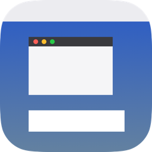
MacStatusBar&Dock
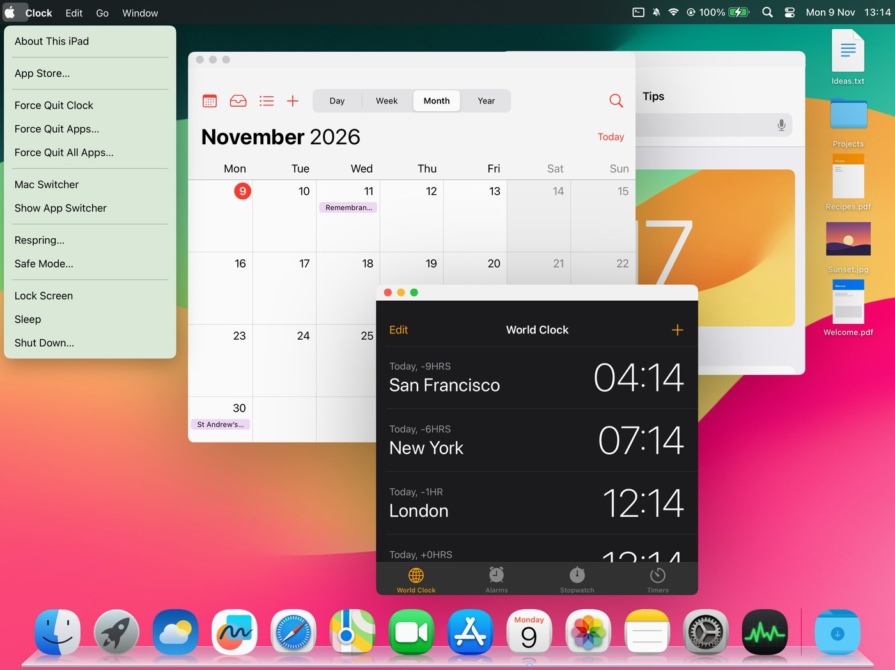
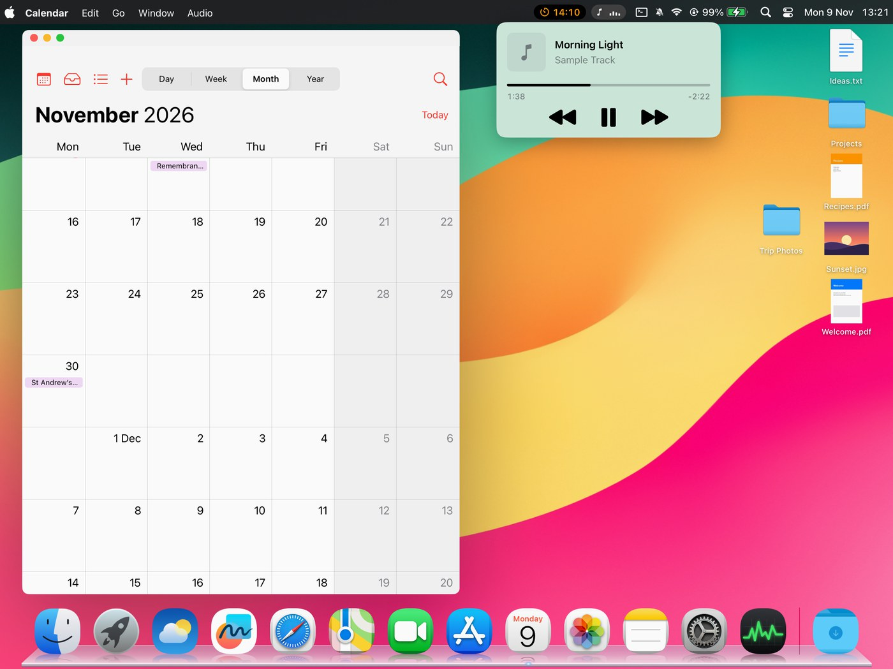
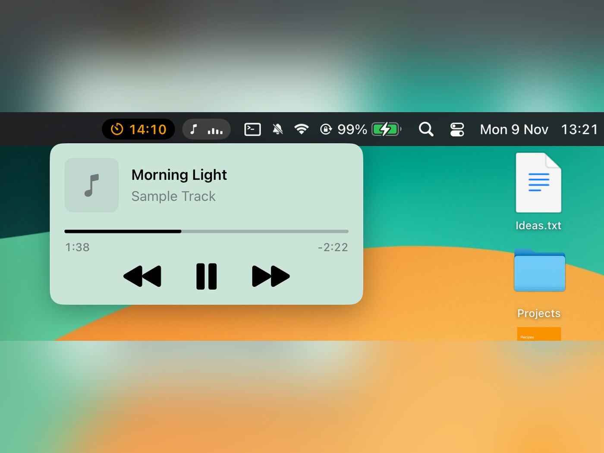
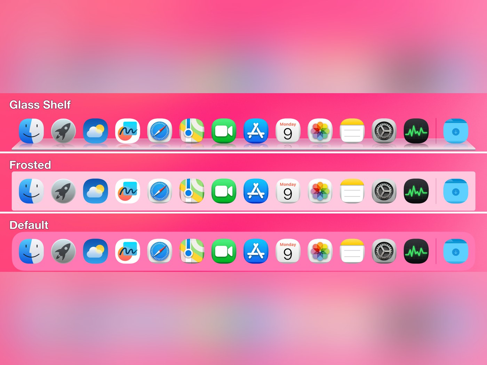
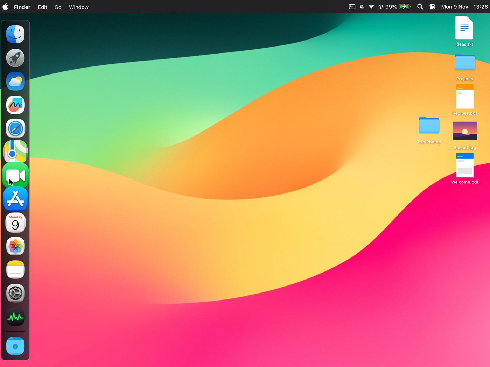
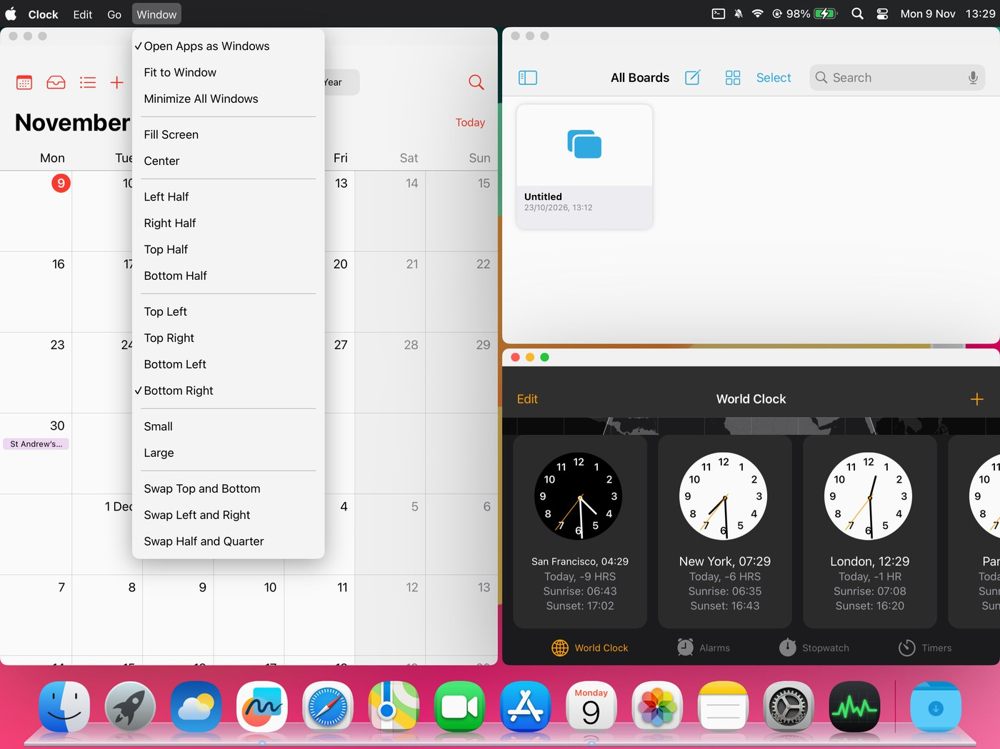
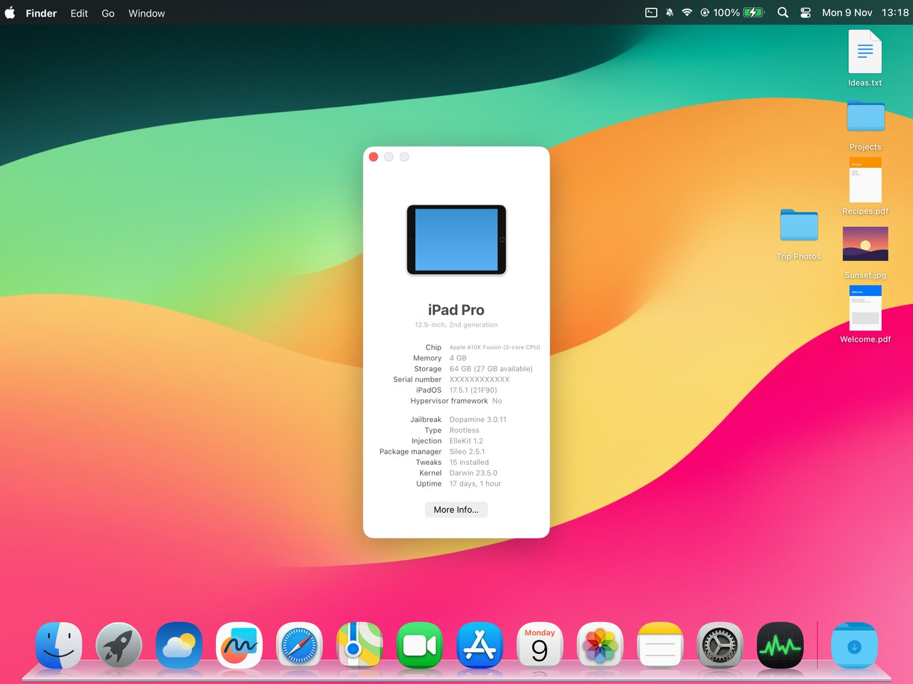
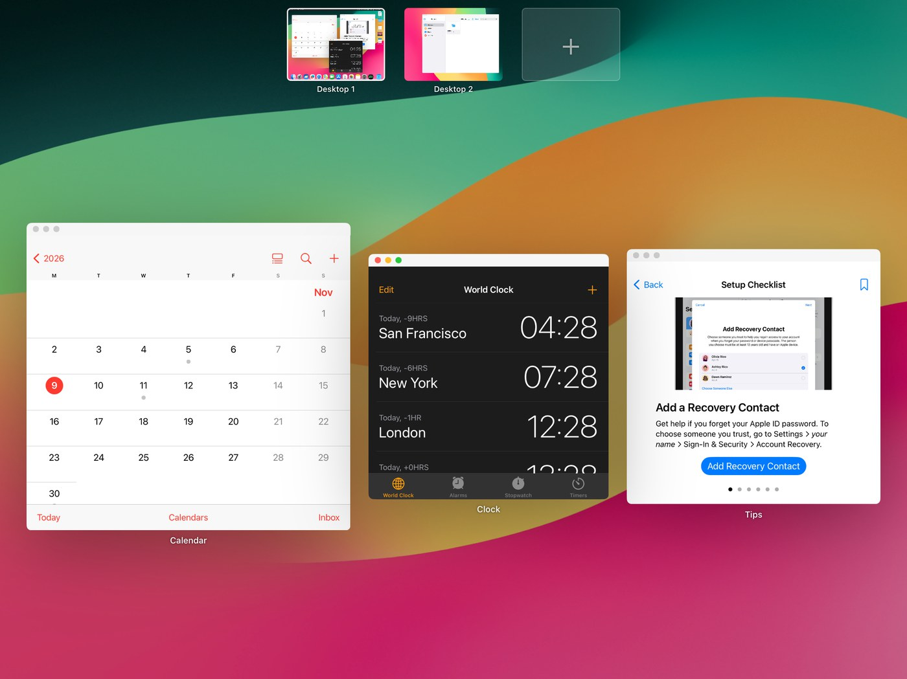
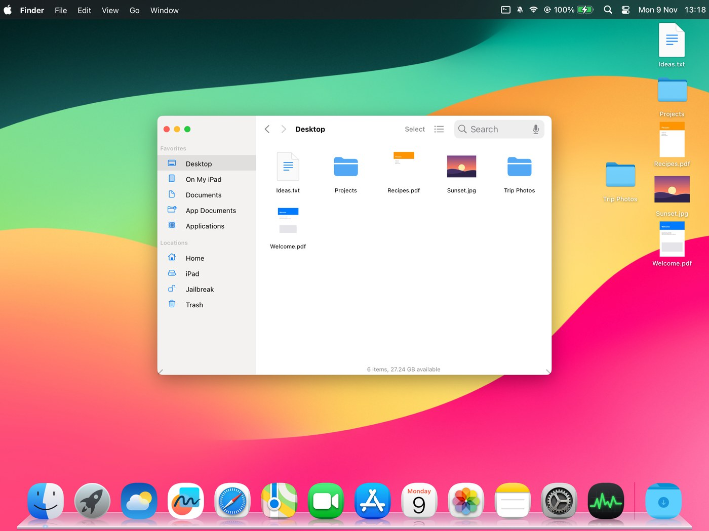
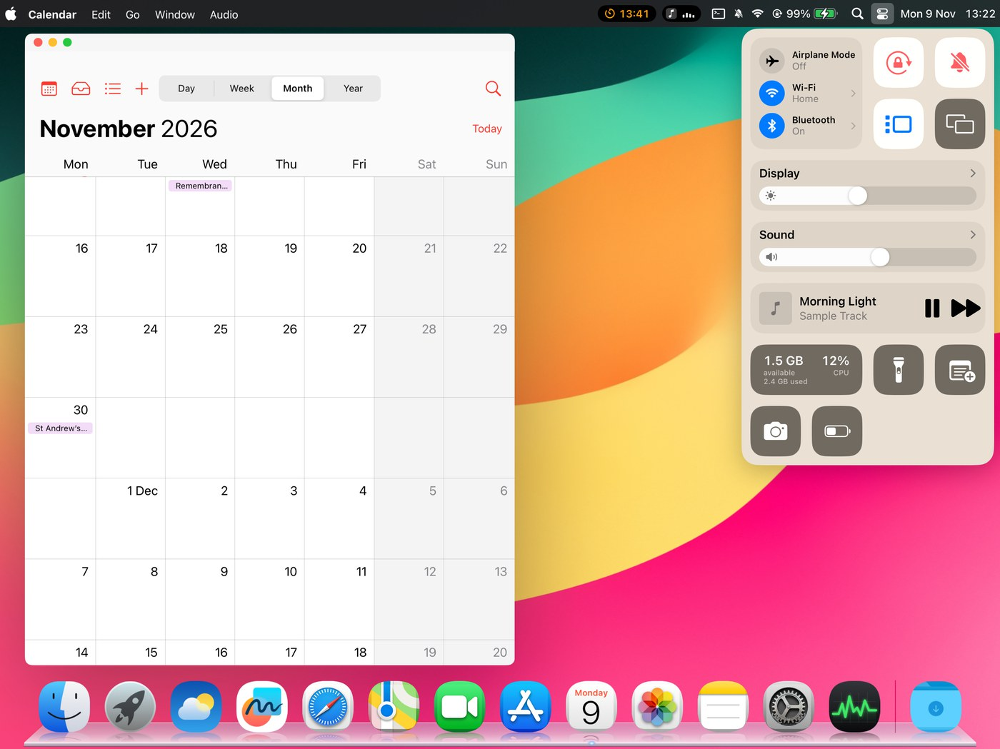
A menu bar with real app menus, Mac windows, a magnifying Dock and much more. It works with just your fingers or with a keyboard and trackpad or mouse, in every orientation. Optional extras, like the auto-hiding menu bar, start switched off, and most features have their own switch in Settings.
Features
Menu bar
A real Mac menu bar: an Apple menu (About This iPad, App Store, Force Quit, Respring, Safe Mode, Lock Screen, Sleep, Shut Down) and menus for the app in front (App, Edit, Go, Window), in every orientation, mirrored in right-to-left languages as on a Mac. Tap the clock for a Today drop-down with your widgets and notifications. Audio mixing per app, with a volume for each app. A VPN menu with Disconnect, and a Wi-Fi menu to switch networks without Control Center. The battery opens a battery menu with Low Power Mode and Sleep Guard, and a Control Center icon next to the clock opens Control Center. Control Center Style in Settings > Status Bar picks a Mac Control Center (Airplane Mode, Wi-Fi, Bluetooth, Display, Sound and Now Playing above your other controls), iPadOS's own or BigSurCenter, and only that one loads. Status Bar Style switches between Mac and the stock iPadOS bar. Menu Bar Size in Settings > Status Bar: Medium and Large make the menu bar taller, with larger text, icons and menus that are easier to tap with a finger. Live Activities in Menu Bar in Settings > Status Bar shows what's playing and your calls as small pills next to the status icons, as on a Mac. A tap on one opens a card to control it. On iPadOS 15.6.1, 16.7.7, 17.5.1 and 18.5, Clock timers show there too. Battery Percentage in Icon in Settings > Status Bar shows the battery level as a number inside the battery icon.
Windows
Mac windows on the engine you already use (Aerial 3.0, 5.0 or 5.1, Zetsu 1.6.2 or 1.6.6, MilkyWay4 on iPadOS 15): title bars, traffic lights, rounded corners, resize handles and Fit to Window tiling. Or Stage Manager as the window engine (iPadOS 16 to 18): Apple's own windowing with the Mac look, over your Home Screen and desktop. Windows stay where you put them and at the size you give them, and an app can have more than one window. Going Home minimizes them so the Home Screen shows, and opening an app brings its window back. Only the window you're using keeps a text cursor, and Esc ends typing. Windows have a smallest size with every engine, as in Stage Manager, and new windows open at the Window Size you pick: Small, Default or Large. With Aerial, Zetsu or MilkyWay4 on iPadOS 15 to 18, every app with a window also gets its App Switcher card. A window you move or resize lines up with the screen edges, the menu bar, the Dock and other windows when you let go of it near them. When you turn the iPad, a window in a layout (Fill Screen, a half or a quarter) takes the same layout in the new orientation, and any other window goes back to where it last was in that orientation. New Windows Open at Fill and Double-Tap a Title Bar to (Fill, Zoom or Minimize) in Settings > Windows & Multitasking work as on a Mac, and Window Tiling Shortcuts in Settings > Keyboard turns on macOS 15's Globe-Control keys for tiling. Keep Covered Windows in Front in Settings > Windows & Multitasking: when a window comes forward, a smaller window it would cover completely stays in front of it. It works with Aerial, Zetsu and MilkyWay4, and its row isn't shown with Stage Manager. KeyPilot by wanghuangjie is the companion tweak for shortcuts of your own, app launching and URL actions, and its window layouts use MacStatusBar&Dock's windows. Settings > Keyboard has a row to get or open it.
Mac Switcher
Desktops and Mission Control like on a Mac, in place of the App Switcher (Settings > Windows & Multitasking > Mac Switcher, off until you switch it on). Swipe up and hold, double press the Home button or press Control-Up on a keyboard to see your desktops and windows. Tap + to add a desktop (up to 8), swipe sideways with four fingers or along the bottom edge and the desktops slide with your fingers, and drag a window onto another desktop to move it. Desktops work with every window engine.
Finder
A Mac Finder window on every engine: sidebar, list and icon views, Quick Look, Search, Undo and Put Back, several-item selection, drag and drop into apps, and Share, which hands an app over as an .ipa. On My iPad shows the same folders as the Files app, and the Trash has an Empty button. Home Screen folders you pick are listed in the menu bar's Finder menu. A desktop on the first Home Screen page for your files and folders, with their menus over your windows, names you can hide, an icon size and app icon corners you pick in Settings > Desktop, and a small TextEdit window for text files. Finder shows folder sizes in its list and in Get Info, worked out in the background. Click a column header in Finder's list to sort by Name, Date Modified, Size or Kind, and click it again to reverse the order. You can also sort from the View menu. Quick Look also previews Office files and CSV, and you can move between previews with the arrow keys or a swipe. On the desktop, with an item selected, the arrow keys move the selection and Space opens Quick Look, as in Finder. It only changes files in your own places, so it can't be used to break the iPad by accident.
Drives in Finder
USB sticks, SSDs and SD card readers show up under Locations as soon as you connect them. On iPadOS 16 to 18, each drive has an Eject button in Finder's sidebar, as on a Mac, and File > Eject and the drive's menu eject it too. exFAT and FAT32 work (FAT32 holds no files over 4 GB); APFS and Mac OS Extended should work too but are not tested yet; NTFS is not supported by iPadOS. SSDs may need more power: connect them straight to the iPad's USB-C port or use a powered hub.
Dock
A macOS Dock: magnification, recent apps, dots under open apps, Finder and Launchpad at its start like on a Mac, and a Downloads stack with search that you can drag files into and out of. In landscape it can sit on the left or right instead, in Settings > Dock > Position on Screen. Settings > Dock also has Dock Style (Default, Glass Shelf or Frosted, the Docks of older macOS), Automatically Hide and Show the Dock, and Animate Opening Applications, which bounces an app's icon while it opens. A Trash at its end, off until you turn it on in Settings > Dock: drop files on it to move them to the Trash, a Dock app to take it out of the Dock, or a drive to eject it (iPadOS 16 to 18). Menus that open from the Dock and the Downloads stack sit over their icon with the Mac's arrow pointing at it. On iPadOS 15 to 17, icon themes such as SnowBoard's change Finder, Launchpad, Downloads, the Trash and Activity Monitor like any app icon. Theme makers find the identifiers in the README on GitHub. In Edit Home Screen, Finder, Launchpad, Downloads and the Trash jiggle with the other Dock icons and don't open when tapped. On iPadOS 15 to 17, SnowBoard's double-tap menu works on them too.
Activity Monitor
A Mac-style Activity Monitor window with the running processes and their CPU, memory and disk use: sort, search, inspect a process and quit apps. Open it from the Go menu, the RAM & CPU panel in Control Center or Spotlight's actions. System processes show no figures, and the Energy and Network tabs have none per process. It's also an app in the App Library, in Utilities and in its search. Add to Dock in its menu puts it in the Dock, where it works like an app. While its window is open, also minimized, it shows in the Dock as an open app, with a dot, and leaves when the window closes. Keep in Dock in its menu keeps it there. While its window is open, it's also in Command-Tab with your apps, in the order you last used it.
Built to be safe
Automatic Crash Recovery: if a feature is followed by two SpringBoard crashes in a row, it switches itself off instead of leaving you in a crash loop, tells you in Settings and offers Report a Problem; another tweak's crash never switches MacStatusBar&Dock off. Off by default on untested iPadOS versions (unless you choose Enable Anyway), does nothing on an iPhone, and never contacts any server.
Also included
A Mac pointer (arrow and I-beam, with Pointer Control colors as an option), Mac-style notification banners (or iPadOS's or Destra's, with Banner Style), Mac-style Haptic Touch menus (Force Quit, App Size and Add App to Folder on app icons, folder shortcuts), a mute icon, Control Center from the menu bar, RAM & CPU and SSH controls for Control Center, a customizable Go menu, an auto-hiding menu bar, Home Screen options (page dots, icon labels, Home Bar, and whether a swipe past the last page opens the App Library), Lock Screen options, keyboard extras (Cmd-Tab to the right window, Esc closes menus, Tab to mute, Globe volume and brightness keys), longer Auto-Lock times, Battery Health in Settings > Battery with Sleep Guard, Keep Tailspin Off to save memory, a search field in the Settings sidebar, Spotlight extras you can turn on (tweak settings, actions, your windows, your Desktop and Downloads files), an SSH switch, Ethernet settings and Reduce Motion support.
The Mac look is on right after install, and most features have their own switch in Settings > Status Bar, Desktop, Windows & Multitasking and Dock. Some extras start off, such as the Mac Switcher, the Dock's Trash, the auto-hiding menu bar, seconds in the clock, the keyboard extras and the Lock Screen options. Apps open full screen until you tap the green light or turn on Window > Open Apps as Windows (with the Stage Manager engine they open as windows from the start).
Which window engine?
On iPadOS 16.1 to 18, an iPad with Stage Manager (or an older iPad with TrollPad) starts with Stage Manager, Apple's own windowing with the Mac look, tested on iPadOS 16.7.7, 17.5.1 and 18.5. Anywhere else, start with Aerial. Zetsu works well too and is a good alternative. MilkyWay4 runs on iPadOS 15 only. Updating keeps the engine you picked.
Report a Problem
The Report a Problem button (Settings > Status Bar, and the Automatic Crash Recovery note) opens a new GitHub issue in your browser, filled in with your iPad model, iPadOS version, window engine and its version, and the tweak's version. If the crash protection switched something off in the last 7 days, it adds what it turned off and when, and a few lines naming the tweak's own code that crashed (nothing from other apps or tweaks); on an untested iPadOS version, which of the tweak's switches are on. The report is part of the link to GitHub, so GitHub receives its text when the page opens. You see the whole text there, can change or delete any of it, and it's only posted as an issue if you submit it (a GitHub account is needed). Nothing personal is included, and the tweak collects nothing in the background.
Compatibility
| iPad only | MacStatusBar&Dock checks your device and does nothing on an iPhone, even one made to look like an iPad by another tweak. |
| Tested | iPad Pro M1, iPadOS 15.6.1 (Dopamine) |
| Tested | iPad Pro 9.7", iPadOS 16.7.7 (palera1n) |
| Tested | iPad Pro 12.9" (2nd generation), iPadOS 17.5.1 (palera1n): Stage Manager with TrollPad, Aerial 5.1 and Zetsu |
| Tested | iPad Pro 12.9" (4th generation), iPadOS 18.5 (Dopamine): Stage Manager, Aerial 5.1 and Zetsu |
| Other iPads | iPadOS 15 to 18 will likely work (untested) |
| Reported by users | iPad Pro (M2, 2022): the Stage Manager engine is offered on iPadOS 16.1 and later, and as "Untested" on 16.0, where a user confirmed the basics (windows, resizing, traffic lights); on 16.3.1 a user confirmed it can be picked and runs. |
| Reported working | iPad Pro 10.5", iPadOS 16.6.1 (by users) |
| Reported working | iPad (5th generation), iPadOS 16.7.16 (by a user) |
| Reported by a user | iPad Air (5th generation), iPadOS 16.3.1, with the Stage Manager engine |
| Jailbreak | Rootless only |
| Memory | On iPads with 2 GB of memory, iPadOS may close apps in the background when many windows are open, for example 7 with the Stage Manager engine. |
| External displays (iPadOS 16) | With the Stage Manager window engine the display gets its own Mac desktop (menu bar, Dock, windows, full screen, Window > Move to Other Display). With the other engines, windows stay on the iPad: open apps from the display's App Library to use them there. |
| External displays (iPadOS 15) | Mirrors the iPad for now. A real second desktop for iPadOS 15 is in the works, and an early version already runs its own menu bar, Dock and apps on a TV. |
| iPadOS 18 | Settings has no room for tweak rows in its sidebar there, so Status Bar, Desktop, Windows & Multitasking and Dock are in a group at the top of Settings > General. |
| Newer iPadOS | Off until you turn on Enable Anyway in Settings, at your own risk. The crash protection still works, and Report a Problem in Settings fills in a short summary for you. |
Known limitations
- The tweak's own menus and Settings pages are in English only.
- Apple's Stage Manager (iPadOS 16 to 18) stays off while another window engine runs, because two window systems would fight over the same apps. To use it, pick Stage Manager as the window engine in Settings > Windows & Multitasking > Window Engine.
- With the Stage Manager engine, a desktop holds up to 7 windows.
- Some apps, like many games, only run full screen. The camera works only full screen (iPadOS pauses it in a window), and Photos opened from the Camera stays full screen.
- Finder can't show iCloud Drive (iPadOS doesn't allow it), drag and drop goes from Finder into apps but not back yet, and drives have been tested on iPadOS 15 only.
- On iPadOS 15, Safari's sound can stop another app that plays alone, as on a stock iPad. Control Center's Now Playing shows one app at a time.
- On iPadOS 18, the Control Center size slider doesn't resize the Mac Control Center yet.
- Aerial 5.0 and 5.1 have to be activated in their own settings before they open windows.
- With Aerial 5.0 or 5.1, don't respring while a VPN is on or was just turned off: Aerial goes online as SpringBoard starts and can hang on a black screen until you restart the iPad. MacStatusBar&Dock warns before resprings that go through iOS.
- The keys that work inside apps (Shift + = / - for the screen brightness, Tab as Mute) do nothing while a package manager, Filza, iCleaner, TrollStore or the jailbreak app is in front: the tweak leaves those apps alone, so they always open even if something goes wrong.
Both parts switched off? If you turn off both MacStatusBar and MacDock in Settings, their Settings pages go away too. Turn them back on in Choicy (or iCleaner Pro), then respring.
Requirements
- A hooking platform: ElleKit, libhooker, or Substrate
- Choicy or the official iCleaner Pro (keeps only one window engine loaded)
- Optional window engine: Aerial 3.0, 5.0 or 5.1, MilkyWay4 0.1.1 (iPadOS 15 only), Zetsu 1.6.2 or 1.6.6. Other versions run as plain windows, without the Mac look.
Changelog
1.8.4.2
New
- Finder now shows folder sizes in its list and in Get Info, worked out in the background, so you can keep working while they come in.
- Quick Look in Finder now previews Office files and CSV too, and you can move between previews with the arrow keys or a swipe.
- Finder sorts by Name, Date Modified, Size or Kind: click a column header to sort by it, and click it again to reverse the order. You can also sort from the View menu.
- On the desktop, with an item selected, the arrow keys move the selection and Space opens Quick Look, as in Finder.
- Battery Percentage in Icon in Settings > Status Bar, off until you turn it on: the battery level shows as a number inside the menu bar's battery icon.
- Clock timers in the menu bar, and dragging the time bar in the card of what's playing, now work on iPadOS 15.6.1 and 16.7.7 too, as on 17.5.1 and 18.5.
Fixes
- An app you drag from Finder to the desktop now gets its real icon as soon as it's copied, instead of staying white.
- MacStatusBar&Dock now needs Choicy or the official iCleaner Pro.
1.8.4.1
New
- Keep Covered Windows in Front in Settings > Windows & Multitasking, off until you turn it on: when a window comes forward, a smaller window it would cover completely stays in front of it, so you don't lose it behind the bigger one. It works with Aerial, Zetsu and MilkyWay4, and its row isn't shown with Stage Manager.
Improvements
- With Double-Tap a Title Bar to set to Zoom in Settings > Windows & Multitasking, a double tap now makes the window as large as it fits while keeping its shape, centred. Fill still fills the desktop edge to edge, and a second double tap gives the window its size from before.
- Icon Size in Settings > Dock now says that the Dock stops growing once it fills the screen.
Fixes
- A window hidden behind a bigger one now comes back with its Dock icon, Command-Tab or the Mac Switcher. Window > Bring All to Front brings the front app's windows above the others, and the Window menu lists them so you can pick one.
- With Stage Manager, turning the iPad keeps the window you're using in front, and right after a respring that changed the Dock's auto-hide, a turn keeps your windows in their layouts.
- Show App Library in Dock applies at once on iPadOS 16 and later. On iPadOS 15 it takes effect after a respring, and Settings > Dock now says so.
- The Dock's magnification now stays under a resting pointer, also when the Dock changes under it, and still eases out when you tap the screen.
1.8.4
New
- Live Activities in Menu Bar in Settings > Status Bar, on by default: what's playing and your calls show as small pills next to the status icons, as on a Mac, and a tap on one opens a card to control it.
- On iPadOS 17.5.1 and 18.5, Clock timers show there too, and you can drag the time bar in the card of what's playing to skip ahead or back.
- One that has ended stays greyed out for a few minutes, then goes. Activities, under the switch, turns each kind off.
- Animate Opening Applications in Settings > Dock, on by default: an app's icon bounces in the Dock while the app opens, as on a Mac. Nothing bounces while Reduce Motion is on.
- Dock Style in Settings > Dock: Default, Glass Shelf (the glass Dock of Mac OS X 10.5 to 10.9, with its reflections) or Frosted (the flat Dock of 10.10 to 10.15).
- Automatically Hide and Show the Dock (Settings > Dock). The Dock hides until you swipe up from the bottom or move the pointer to its edge, with every window engine. It's off until you turn it on, and it replaces Stage Manager's own Dock option.
Fixes
- Globe-Control keys that Window Tiling Shortcuts can't act on at that moment now go on to iPadOS, so iPadOS 15's own Split View keys work.
- With Stage Manager and windows of several apps, Globe-Control-C and Globe-Control-R now act on the front window, and the Shift arrangements take in the other apps' windows behind it.
- With a keyboard layout such as Turkish F, Window Tiling Shortcuts now use the key that types F, C or R, wherever it sits.
- Finder and TextEdit windows zoom at once again on a title-bar double tap, and after Zoom, Globe-Control-R gives them their size from before.
- After you move or resize a window by hand, Globe-Control-R no longer takes it back to an older size.
- In Edit Home Screen, Launchpad grows with the other Dock icons under the pointer again, and a Trash that fills up while you edit shows that it's full.
- With Launchpad Icon off in Settings > Dock, the App Library icon keeps its own look in Edit Home Screen.
- With Stage Manager, tapping an app in the App Switcher right after a swipe up no longer crashes SpringBoard.
- With Aerial, arranging windows from a full-screen app no longer minimizes the windows behind it, and a window minimized before a respring comes back where it was.
- With Stage Manager, moving the Dock to the left or right no longer brings the window behind to the front.
- On a TV with Stage Manager, the green button goes to full screen at the first press.
1.8.3.1
Fixes
- Double-Tap a Title Bar to now shows in Settings > Windows & Multitasking with Stage Manager as the window engine, and with no window engine, where it sets Finder and TextEdit windows.
- New Windows Open at Fill no longer shows in Settings > Windows & Multitasking while no window engine runs, since it does nothing then.
- With an accessibility feature such as Full Keyboard Access on, the green button of Finder and TextEdit windows no longer sits below the other two.
- Globe-Control-R (Return to Previous Size) now brings a window back fully on screen after you turn the iPad.
- With the Dock on the left or right, Finder, Downloads and the Trash now stand upright in Edit Home Screen, and keep their size when the pointer is over the Dock.
- The Dock's switch in Settings > Dock is now called Mac-Style Dock.
1.8.3
New
- Window Tiling Shortcuts in Settings > Keyboard, off until you turn it on: macOS 15's Globe-Control keys tile the front window, such as Globe-Control-Left for the left half or Globe-Control-F to fill the screen.
- The shortcuts use the Globe key. On a keyboard without one, set another key to Globe in Modifier Keys on the same page.
- New Windows Open at Fill in Settings > Windows & Multitasking: new windows fill the desktop, and Fit to Window doesn't tile them. Off until you turn it on.
- Double-Tap a Title Bar to in Settings > Windows & Multitasking: pick Fill, Zoom or Minimize, as on a Mac, and a double tap on a window's title bar does it with every engine. It starts at Do Nothing.
- Other tweaks can now tile windows and go Home through MacStatusBar&Dock. KeyPilot by wanghuangjie is the first: it adds your own shortcuts for apps, window layouts and URLs, and Settings > Keyboard has a row to get or open it.
- In Edit Home Screen, the Dock's Finder, Launchpad, Downloads and Trash jiggle with your other icons and no longer open when tapped. On iPadOS 15 to 17, SnowBoard's double-tap menu works on them too.
Fixes
- With Aerial 5, Fit to Window's question now lines up with your windows, as with the other engines.
- With the Dock on the left or right, Handoff and recent app icons no longer show up sideways.
- With Stage Manager and Fit to Window, a window you place with the Window menu now stays there when you turn the iPad, and joins the tiles again when the next window opens, as with the other engines.
- The Globe + Option/Control volume keys now change the volume once for every tap. Some taps used to do nothing.
- A full-screen app no longer shows a thin dark line above the menu bar.
Thanks
- Thanks to wanghuangjie (KeyPilot) for the window API design and its first version.
1.8.2.2
Fixes
- With the Dock on the left or right, long-press menus on Dock icons read from top to bottom and point at their icon, and wide previews such as widgets stay on screen.
- With the Dock on the right, the Mac Control Center no longer covers it.
- With the Dock on the left or right, windows follow it when its size changes, for example when recent apps come and go.
- With Stage Manager and the Dock on the left or right, minimizing the last window on a desktop now goes into its Dock icon.
- With Zetsu and the Dock on the left or right, a minimized window comes back where it was.
- With the Dock on the left or right, Fit to Window's question sits centred over its choices.
- Typing in the Downloads stack's search with a hardware keyboard on iPadOS 18 no longer moves the panel off the screen.
1.8.2.1
Fixes
- With Control Center Style set to Mac, changing a module's size from the module itself, such as Uptime's Module Size, no longer crashes SpringBoard.
- After a respring, a window filling another desktop still fills it when you move the Dock with Position on Screen.
- With Stage Manager, a window in half of the screen keeps its half when you move the Dock straight from one side to the other with Position on Screen.
1.8.2
New
- Position on Screen in Settings > Dock puts the Dock on the left or right in landscape, leaving your windows more height. In portrait it stays at the bottom.
- Windows on every engine, Home Screen icons, the clock's Today drop-down and Mac-style banners keep clear of a side Dock. Over a full-screen app, move the pointer to that edge to bring the Dock out.
Fixes
- With a trackpad, a two-finger scroll down over the Home Screen beside a window no longer opens the App Library.
1.8.1.2
Fixes
- With Aerial 5.1, a window on another desktop is visible again after a respring or a window engine change. It used to stay invisible.
1.8.1.1
Fixes
- Changing the window engine from Stage Manager and back no longer empties the current desktop or leaves its window off the screen.
- On iPadOS 18, letting go of a Notification Center pull over a full-screen app no longer leaves you without the menu bar.
- On iPadOS 17, the same pull no longer collapses the right side of the menu bar.
- On iPadOS 18, with seconds showing in the clock, the same pull no longer cuts off the time at the screen's edge.
- On iPadOS 18, the menu bar no longer shows two Wi-Fi icons after the green button takes a window full screen.
1.8.1
New
- Mac Control Center on iPadOS 18: Connectivity, Display, Sound and Now Playing are now Mac tiles above your other controls, and Wi-Fi, Bluetooth, Display and Sound open their own pages. Add a Control offers them too.
Improvements
- About This iPad looks like macOS's About This Mac.
- With the Stage Manager engine, a tap on a full-screen window keeps a smaller window in front of it, and a tap or slide on the menu bar no longer moves windows. A slide in a window behind no longer brings it forward.
- Fit to Window asks where a third window goes before the app opens, with every engine, and a Spotlight pick no longer closes the question.
- With the Mac Switcher off, windows keep their title bar in the App Switcher and come back smoothly.
- With Zetsu, a new window now steps aside from the one under it, as with the other engines.
- On iPadOS 18, Esc closes the Mac Control Center, a long pull no longer moves its tiles, and it shows which app is using the camera or microphone.
- Haptic Touch menus: Aerial 5's Open in Aerial and Remove Stage State rows are hidden while Aerial is your window engine, and MilkyWay4's Launch As Window is hidden in the App Library.
Fixes
- Show Page Dots off stays off: the dots no longer come back after closing a folder or entering edit mode.
- With the Mac Control Center and Apple's camera, microphone or location indicator showing, a tap on the menu bar's Control Center icon closes Control Center instead of opening the privacy list.
- A notification tap on the Lock Screen opens the app in its window instead of full screen.
- After a respring, the first full-screen app opened from the Lock Screen shows the Mac menu bar instead of the stock one.
1.8.0.1
Fixes
- With Control Center Style set to Mac, SpringBoard could crash and drop into Safe Mode at a slow start, most likely right after an install. It no longer does.
1.8.0
New
- Mac Control Center: Airplane Mode, Wi-Fi, Bluetooth, Display, Sound and Now Playing as on a Mac, above your other controls. Choose Mac in Settings > Status Bar > Control Center Style (on iPadOS 18 it holds Apple's own controls).
- Control Center Style also offers iPadOS and BigSurCenter, and only the chosen one loads. You keep your current one until you pick another.
- Banner Style in Settings > Status Bar replaces Mac-Style Banners: Mac, iPadOS or Destra banners, and only the chosen style loads.
- Window Size in Settings > Windows & Multitasking: new windows open Small, Default or Large, with every window engine.
Improvements
- New windows open at the same size and step aside the same way with every engine, and the Window menu's Small and Large match Window Size.
- Fit to Window works the same with every engine: windows keep their places when one closes or another joins, and a minimized window keeps its tile.
- With Aerial, an app the green button takes out of full screen opens beside your windows, not on top of one, as with Zetsu and MilkyWay4.
- With Aerial, Zetsu and MilkyWay4, apps opened from other launchers open in their window, as from the Dock, not full screen.
- The menu bar's Control Center icon lights up while Control Center is open, and a second tap closes it.
- Mac Switcher: a swipe up opens it the same way iPadOS opens the App Switcher.
- Downgrading, or an untested iPadOS version where MacStatusBar&Dock stays off, gives back the tweaks it keeps from loading.
Fixes
- On iPadOS 16, the first tap on the menu bar after a respring works. It used to do nothing.
1.7.9.2
Fixes
- Stage Manager engine: a drag on a window no longer resizes a smaller window behind it.
- Stage Manager engine: apps opened from other launchers, links or Spotlight bring their window to the front, as the Dock does.
1.7.9.1
Fixes
- Stage Manager engine: opening an app from the Dock, the App Library or the Home Screen now brings its window to the front, also when another window covers it completely.
1.7.9
New
- Battery menu: tap the battery in the menu bar for Low Power Mode, Sleep Guard and Battery Settings. A new Control Center icon next to the clock opens Control Center. To go back, turn off Battery Menu in Settings > Status Bar.
- Home Minimizes Windows (on by default): swipe up from the bottom or press the Home button to minimize your windows and see the Home Screen. Opening an app brings its window back. It's in Settings > Windows & Multitasking.
- Folders in the Finder menu: choose Show in Finder Menu in a Home Screen folder's Haptic Touch menu to list it in the menu bar's Finder menu.
- App Icon Corner Radius in Settings > Desktop: choose how round the desktop's app icons are, from square to circle.
- Keep Tailspin Off in Settings > Windows & Multitasking (on by default on iPads with 2 GB of memory): stops an iPadOS diagnostics trace that uses tens of MB of memory.
Improvements
- Battery Health and Sleep Guard now work even with another battery health tweak installed.
- Sleep Guard's description in Settings now explains how it saves battery.
- Settings search always finds the tweak's own settings.
Fixes
- With Reduce Motion on, a steady swipe up goes Home instead of opening the Mac Switcher.
- With a keyboard, opening a menu bar menu no longer makes the app behind it look inactive.
- Settings on iPadOS 17 no longer crashes when you go back to it while it's loading.
- With Aerial, locking the iPad no longer brings back windows you minimized, and windows on other desktops stay there.
- On iPadOS 17 and 18, two-finger scrolling with a trackpad in the menu bar's Today panel scrolls up and down. It used to scroll sideways.
- The menu bar stays in place and works while a Home Screen folder is open. It used to slide behind the folder and ignore the first tap.
1.7.8.2
Fixes
- Battery Health on iPadOS 15 and 16 shows your battery's Maximum Capacity, without a wrong warning that the battery couldn't be verified.
1.7.8.1
Fixes
- Dock: the dot under an app shows only for apps you have open. An app iPadOS starts in the background by itself, such as Calendar after an iCloud calendar sync, got a dot though you never opened it, and now has none until you open it. Apps with a window on another desktop or minimized keep their dot.
1.7.8
New
- Battery Health on iPad: Settings > Battery has the Battery Health page on every iPad, as on an iPhone (Battery Health & Charging on iPadOS 17 and 18), with the battery's Maximum Capacity and a Cycle Count row. Rows for iPhone-only features, such as Peak Performance Capability, are left out. If another battery health tweak is installed, the page is left to it.
- Sleep Guard, in a new Battery Use group on the Battery Health page, on by default: when the screen is off and the only thing keeping the iPad awake is a hold left behind by a process that's gone, such as a SpringBoard from before a respring, it clears that hold so the iPad can sleep. It never acts with the screen on or while something else keeps the iPad awake, such as audio, a download or a backup, and at most once in 30 minutes and 6 times a day. iPads stuck awake this way lost about 10 to 28% of their battery a day. While a hold is stuck and not cleared, an iPad Can't Sleep row shows since when.
- Activity Monitor is in Command-Tab while its window is open, also when it's minimized or on another desktop, with its icon and in the order you last used it. Picking it brings its window forward, and Command-Q closes the window. This doesn't depend on the Show in App Library switch.
- Swiping past the last Home Screen page no longer opens the App Library. The pages end at the last one, as they do at the first, and this update turns it off on every iPad. To get it back, turn on Swipe Past Last Page Opens App Library: on iPadOS 15 and 16 it's in Apple's Home Screen settings, next to the App Library's rows, and on iPadOS 17 and 18 in the Home Screen group of Settings > Dock. The Dock's Launchpad icon and the App Library's other ways in work as before.
Improvements
- Less memory: the tweak's parts for apps now load only into apps, their extensions and SpringBoard, no longer into background system services. That saves about 1 MB in each of those services, up to tens of MB in all, depending on the iPad. Services that are already running let go of them when they next start, at the latest when the iPad restarts.
- Apps use a little less memory too, about 0.2 MB each: the Home Bar part now loads only into SpringBoard, and the audio mixing part adds some of its hooks only when an app first plays sound of its own.
- iPadOS 18: the tweak no longer lays out its menu bar inside Control Center's hidden status bar, so SpringBoard does about 10 ms less work each time Control Center opens or closes.
- With the screen off, the tweak's own timers stop: Activity Monitor's refresh (also while its window is minimized), the RAM & CPU tile in Control Center, a Dock check and the screen orientation readings. A 4-second timer in every app now runs only while that app is active. On iPads without Choicy, the tweak's helper no longer looks for Choicy's settings every 5 seconds, day and night.
- iPadOS 16 to 18: SpringBoard takes a hold that keeps the iPad awake as it starts, and now gives it back a minute later and before a respring from the tweak. A SpringBoard that went away still holding it, for example in an install's respring, could keep the iPad awake for days.
- Desktop with a trackpad or mouse: a click held still opens the desktop's menu after 0.75 seconds, as iPadOS's own menus do, so a click that pauses before a drag has more time. It was 0.45 seconds. A finger's hold stays as it was, and a two-finger click still opens the menu at once.
- Add to Folder is now called Add App to Folder, in an app icon's Haptic Touch menu and in its switch in Settings > Status Bar, Add App to Folder in App Menus.
Fixes
- Mac Switcher with a finger: a swipe up that slows down before you lift goes Home. It could open the Mac Switcher. The Mac Switcher now opens after a short hold, with the finger still for a moment. A trackpad or mouse works as before. With Reduce Motion on, a hold opens the Mac Switcher as soon as iPadOS reads the pause, as before.
- Desktop: touching it keeps Finder's and Activity Monitor's windows active and in front, as on a Mac. A desktop icon can now be dropped on a Finder window that was over an app's window. The touch sent Finder's windows behind the app windows first.
- Desktop: a finger held for a moment and then moved down does one thing, the swipe down or the selection rectangle. Held a little shorter than the rectangle needs, it could open the App Library and draw the rectangle under it.
- Desktop: a finger held still but trembling a little opens the desktop's menu after 1 second. It could open nothing.
- The menu bar shows its Audio menu only while sound really plays. An app playing silently, such as a muted video preview, could show it with nothing to hear.
- With Aerial on iPadOS 15, after the green button the full-screen app shows at once, without a faint picture of the old window over it for a moment.
- Removing the tweak now really empties its list of the apps you quit, which iOS doesn't prewarm. iPadOS kept a copy of it, so a reinstall started with the old list.
1.7.7
New
- Activity Monitor shows in the Dock while its window is open, also when it's minimized, as an open app with a dot. It's first among the recent apps, or after the Dock's apps when the Dock shows no recent apps, and it leaves when the window closes. Keep in Dock in its menu keeps it there.
- Finder: Share on an app, in Applications or any .app in Finder or on the desktop, hands it over as an .ipa named after the app and its version, for example to save it in Files. A drag into an app does the same. For an App Store app, a note says first that the copy only opens on iPads signed in with the same Apple ID. Nothing is decrypted. Apps over 2 GB can't be handed over this way.
- iPadOS 15 to 17: RAM & CPU is added to Control Center by itself, once, if it fits at the end without moving anything or making Control Center scroll. This happens the first time Control Center opens and closes after you install or update. If you take it out, it isn't added again, and with Memory Magic's tile in Control Center nothing is added. With BigSurCenter it shows after the next respring. On iPadOS 18, add it with Add a Control as before.
Improvements
- Prewarm Apps in Settings > Windows & Multitasking is shown only where the tweak can control prewarming on that iPad. It could show where it did nothing.
- Prewarm Apps is off by default on iPads with 2 GB of memory, such as the iPad Air 2 and the 9.7-inch iPad Pro. If you never changed it, this update turns it off there. A setting you made yourself stays.
- Settings > Desktop has a new icon. Its footers now say that desktop icons are the files and folders in On My iPad > Desktop, separate from your app icons, and that Icon Size changes only the desktop icons.
Fixes
- With Aerial on iPadOS 15, Activity Monitor opened from the App Library comes up as its normal window, in front. Since 1.7.5 it showed a black window, and it opened inactive.
- With Aerial on iPadOS 15 in landscape, apps' scroll bars sit at the window's right edge. In Fill Screen and the half layouts they sat further in, for example in the middle of a Bottom Half window.
- With Aerial on iPadOS 15, the green button zooms a window smoothly to full screen. It showed a blurred, frozen window for about a second first. Going back to the window no longer waits either.
- Desktop icons you drag follow your finger or pointer again. Since 1.7.2 the drag often showed nothing until the drop, almost always with a trackpad. The icons land where you let go, and icons dropped into a folder or the Trash leave the desktop at once.
- Desktop with a trackpad: a click that pauses before you drag on the empty desktop starts the selection rectangle. It could open the desktop's menu instead. A click held still opens the menu after the same hold time as a finger, and a two-finger click opens it at once.
- RAM & CPU and Activity Monitor: Available is now the memory apps can get without anything being compressed or closed (free, inactive and speculative memory), counted directly, and Used is the rest. Before, Available was what was left after the used memory, so an error in iPadOS's own counts could make it look lower, by about 1.2 GB on one iPad.
- iPadOS 17 and 18: the Home Screen no longer stutters for a moment about 20 and 90 seconds after a respring, or when the Wi-Fi menu closes.
- iPadOS 15 and 16: taps in the App Library reach it where a window of the tweak's own, such as Finder or Activity Monitor, is open behind it. They did nothing there.
- Desktop: a finger held for a moment and then moved down draws the selection rectangle only. It could also open the App Library, or show the desktop's menu for a moment.
- A Dock icon's menu takes taps where it covers a window, for example Activity Monitor's menu over its own window, and a tap beside the menu closes it.
1.7.6
New
- An SSH control for Control Center, when OpenSSH is installed: a tap turns SSH on or off, and the SSH switch in Settings and the menu bar's SSH icon follow. A press and hold shows whether SSH is on, the iPad's address and the ssh command, and the reason when a switch didn't work. Add it in Settings > Control Center on iPadOS 15 to 17, or with Add a Control on iPadOS 18, where it's under Settings. With BigSurCenter on iPadOS 15 and 16 it works there too.
Improvements
- iPadOS 18: in Add a Control, RAM & CPU is listed under Activity Monitor, with its icon, instead of under SpringBoard.
Fixes
- Finder: an app dragged from Applications to the desktop, into a folder or onto the Downloads stack arrives as the app, with its icon, and opens it. It's named as the app's own folder, for example MobileTimer.app for Clock. Before, you got a folder with the app inside. It's a copy that opens the installed app, so after the app updates it still opens the current version, and moving it to the Trash leaves the app installed.
1.7.5
New
- Settings has a Desktop page, right under Status Bar: Show Desktop Icons and Hide Desktop Icon Names move there from the Status Bar page, keeping your settings, and Icon Size is new.
- Icon Size for the desktop icons, from 40 to 96 points, in Settings > Desktop. The icons change as you drag the slider, their names and spacing follow, and every icon keeps its place. Until you change it, they keep your Home Screen's icon size. Home Screen app icons don't change.
- iPadOS 15 to 17: icon themes, such as SnowBoard's, change Finder, Launchpad, Downloads, the Trash (empty and full) and Activity Monitor like any app icon, with the theme's order and masks, and they follow a theme change right away. Without a picture in the theme they keep their own, shaped like your other icons. The identifiers for theme makers are in the README.
- Menus that open from the Dock and the Downloads stack sit over their icon with the Mac's arrow pointing at it, also when the screen's edge pushes a menu aside. The Dock's menus get it with Haptic Touch Menus set to Mac, the default.
- Prewarm Apps in Settings > Windows & Multitasking: iPadOS starts some apps in the background before you open them, so they open a little faster. Turn it off to keep that memory free on an iPad with little RAM. It stays on unless you turn it off.
Improvements
- A shorter Settings sidebar on iPadOS 15 to 17: Notifications & Sounds and Focus & Screen Time each open a page with Apple's two pages on it. Links and search results that lead to Apple's pages still open them.
- The empty Ethernet row leaves the Settings sidebar while a trackpad or mouse and a keyboard are both connected. It comes back as soon as an adapter is connected or one of them is disconnected.
- Aerial, Zetsu and MilkyWay4: a window that opens again at its last place stays there, as a Mac app's window does. Only a window that would sit right on another is still moved aside.
Fixes
- Stage Manager engine: a window brought from another desktop keeps its size. It could come back at an older size.
- Stage Manager engine on iPadOS 17 and 18: a window you resize next to another snaps to it from 10 points away again, as with the other engines. With 1.7.4's 6-point gap it snapped only within 6.
- Aerial: a window dragged by its title bar moves exactly as far as your finger. It went 6 points further sideways.
- Switching from Zetsu to Aerial brings every window back at its size and in its layout. The first one came back 8 points taller.
- A pull down from the top edge opens only Notification Center or Control Center. Started just under the menu bar, or while the menu bar was hidden, it also opened the App Library behind them, which stayed until you pressed Home.
- Stage Manager engine: opening an app from a menu, Spotlight or a link while the App Library is showing closes the App Library, as an icon tap does. The app stayed hidden behind it until you pressed Home.
- After turning the iPad and back, a window not in a layout stays a free window. If its place in the other orientation was a quarter's, it came back as that quarter.
- Stage Manager engine with the menu bar hiding itself: windows in a half or a quarter take the same layout when you turn the iPad. While the bar was hidden they were taken for free windows.
- iPadOS 17 with Include Tweak Settings on: a Settings search that lists one of the tweak's settings pages no longer crashes Settings.
1.7.4.1
Fixes
- With SnowBoard, or another theme engine that reloads the icons, opening the App Library after applying a theme no longer crashes SpringBoard, and Activity Monitor is back in the App Library's Utilities tile. Both broke in 1.7.3; search still found Activity Monitor.
1.7.4
Improvements
- When you turn the iPad, a window in a layout (Fill Screen, a half or a quarter) takes the same layout in the new orientation, and any other window goes back to where it last was in that orientation. This works the same with every window engine and on every desktop. Before, Aerial, Zetsu and MilkyWay4 scaled the windows, so a half could come back off its half.
- After waking the iPad, windows are back sooner: Aerial's about a second sooner, Zetsu's after about 1 second instead of almost 3, and the apps in MilkyWay4's windows wake up about 2 seconds sooner.
- iPadOS 16 to 18 with Aerial or Zetsu and a hardware keyboard: typing goes to the window in front, as on iPadOS 15. A window behind can no longer keep the keys, and gets them back when you click it.
- Stage Manager engine: switching Fit to Window off spreads the windows back out at a normal size, as with Aerial, Zetsu and MilkyWay4. They stayed tiled.
- Stage Manager engine on iPadOS 17 and 18: a window you resize next to another keeps the same 6-point gap as with every other engine, instead of Stage Manager's own 10.
- iPadOS 15 with Aerial: while the keyboard is up, two of the tweak's own steps no longer undo each other five times a second.
Fixes
- iPadOS 18: Respring and Safe Mode in the Apple menu work again (they did nothing there).
- Zetsu: an app opened again right after its window was closed gets its window, also when it was still opening. It showed none until it was opened once more.
- Stage Manager engine with Go to the App's Desktop on: opening an app whose window is minimized on another desktop takes you to that desktop, as with the other engines. The window came to the desktop you were on.
- Stage Manager engine on iPadOS 16: a window dragged by its title bar lands where you let it go, and snaps. Stage Manager's own window drag took over after a moment, and the window sprang back near where it started.
- Stage Manager engine: after turning the iPad and back, a tall window gets its full height back on iPadOS 17, and a window on another desktop fits the new orientation instead of keeping the old one's size.
- A window you made full screen with the green button goes back to its place after a respring too, with every window engine. It came back at the app's default place.
- After switching the window engine, windows come back at the same size and place. Coming from Aerial, Zetsu's windows were up to 12 points larger and overlapped.
- With Automatically Hide and Show the Status Bar on, a window at the very top of the screen can be dragged by its title bar and snaps where you let go. Notification Center's pull took the drag over after a moment and the window stopped.
- Starting to pull down Notification Center and letting it go back leaves the menu bar as it is. It switched to its Lock Screen look and faded its items back in.
- After a respring, the first pull down from the top edge opens Notification Center or Control Center. On some iPads the first touch after a respring was held back, so that pull did nothing.
- With a hardware keyboard, Esc closes Spotlight.
- With a hardware keyboard, Command-A in a search field of the Home Screen, such as the App Library's, selects its text instead of every icon on the desktop.
- TextEdit opens a text at its top, as on a Mac. A long text opened scrolled to its end.
- Keyboard Button in Status Bar (Experimental), iPadOS 15 with Aerial: for an app in a window, the button sits in the menu bar instead of the middle of the screen.
1.7.3
New
- Menu Bar Size in Settings > Status Bar: Small (the size it had until now), Medium or Large. Medium and Large make the menu bar taller, with larger text, icons and menus that are easier to tap with a finger. Apps and windows start right under it, and windows placed under the old size move to fit under the new one. Window title bars keep their size. It takes effect after a respring.
- Window snapping with every window engine: a window you move or resize lines up with the screen edges, the menu bar, the Dock and other windows when you let go of it near them.
- Activity Monitor can be added to the Dock: choose Add to Dock in its icon's menu in the App Library. There it works like an app: a tap opens its window or brings it forward, and a dot shows while the window is open. Remove from Dock in its menu takes it out again. It's never saved with your Home Screen layout, so nothing is left behind when the tweak is off or removed.
- Finder: each drive in the sidebar has an Eject button, as on a Mac, and File > Eject (Command-E) ejects the selected drive or the one the window shows. A long press or a right click on a drive's row opens its menu with Open, Open in New Window, Get Info and Eject. iPadOS 15 can't eject drives this way, so there only the menu is added, without Eject.
Improvements
- Removing the tweak or switching MacStatusBar off sets an Auto-Lock of 2 hours to 1 hour. iPadOS on its own takes anything over an hour for Never, so the iPad stopped locking by itself. Switching MacStatusBar on again brings back the 2 hours.
Fixes
- Zetsu: a window closed while its app was still opening no longer crashes SpringBoard a few seconds later. This could happen after switching to Zetsu with windows open, and end in Safe Mode.
- iPadOS 18: dropping a drive on the Dock's Trash ejects it. iPadOS 18 didn't let the tweak start its eject helper, so you got an error instead.
- iPadOS 18: Finder shows a drive under its own name instead of a long ID.
- Aerial, Zetsu and MilkyWay4: with a window in front, the iPad waits the whole Auto-Lock time, as with an app in front. iPadOS took those windows for the Home Screen, where it halves the time on some iPads, so 2 hours could lock after 1 hour.
- Quick Look: PDF pages no longer flicker, and no part of a page stays blurred. Depending on where the window was, part of the page kept switching between sharp and blurred, or stayed blurred.
- App Library search: when you type fast, Activity Monitor is listed exactly while its name matches what you typed. It could be missing, or stay listed after the text stopped matching.
- With a hardware keyboard, Command-W closes Activity Monitor's window and Command-M minimizes it, as in Finder. Before, Command-W left it open.
- iPadOS 15 and 16: after unlocking, the menu bar's titles, date and icons no longer show a few points too low for a moment.
- iPadOS 16 in landscape, with Automatically Hide and Show the Status Bar on: while the menu bar is hidden, a pull from the top edge opens Notification Center or Control Center, and the left edge of the screen takes touches. The strip that catches that pull was on the left edge, where it took every touch.
1.7.2
New
- Activity Monitor is an app in the App Library, in the Utilities category and in the App Library's search, and a tap opens its window. Show in App Library in Settings > Status Bar turns it off.
- Add to Folder in an app icon's Haptic Touch menu: pick one of your Home Screen folders, or New Folder, and the app moves into it. It's there for apps on the Home Screen, in folders and in the App Library, not in the Dock, and full folders are greyed out. Add to Folder in App Menus in Settings > Status Bar turns it off. While the AddToFolder tweak is installed, that tweak's item is used instead.
- Finder: the Trash window has an Empty button at the top right, as on a Mac. It asks first, and it's greyed out while the Trash is empty.
- Emptying the Trash plays a sound, from Finder's Empty button, the File menu or the Dock's Trash. It follows the ringer volume and stays silent while the iPad is muted.
- Desktop: Hide Name in an icon's menu hides its name, and Show Name brings it back. The icon keeps its place, the name stays hidden after a rename or a respring, and VoiceOver still reads it. Hide Desktop Icon Names in Settings > Status Bar hides every name.
Improvements
- Finder: On My iPad shows the same folders as the Files app, with a folder for each app that shares its files there, under the name Files gives it and with the app's icon. An app's folder shows up once the app has put a file in it. App folders can't be renamed or moved to the Trash, but what's in them can be changed.
- The Window menu's layouts and Fit to Window's tiles reach the edges of the screen with every window engine: the sides, right under the menu bar and down to the Dock. Tiles are 6 points apart instead of 10. Before, they kept a gap at the sides, and a wider one with the Stage Manager engine on iPadOS 17 and 18.
- A long press or a right click on a desktop icon, or on the empty desktop, opens the Mac menu over your windows, and the windows stay where they are. With iPadOS's menu every window faded out while it was open, and choosing Quick Look or Open made them leave and come back. For a preview, use Quick Look. The empty desktop's menu has Edit Home Screen, since a long press there no longer starts it.
- Activity Monitor no longer stutters every 2 seconds when it updates its list.
- Installing an update no longer restarts the system service that prewarms apps when the tweak's part in it is unchanged, as in most updates. After a restart, that service kept the CPU busy for many minutes.
- The pointer settings show Hide in Virtual Mac only on iPads that can run virtual machines: M1 and M2 iPads up to iPadOS 16.3.1.
Fixes
- Scrolling with a trackpad or mouse in Finder, Quick Look, TextEdit and Activity Monitor is smooth, with momentum and the bounce at the ends, as with a finger.
- Auto-Lock set to 2 hours now locks the iPad after 2 hours. iPadOS took any time over an hour for Never, so the iPad never locked on its own. 2 hours is listed only while the tweak can keep it.
- With a hardware keyboard and an app's window open, the keys go to the desktop while one of its icons is selected, so Space opens Quick Look. The app got the keys instead, and Space could pause its music.
- Stage Manager engine: turning the Mac Switcher off and on again no longer adds the apps open behind the one on screen to Desktop 1 as windows. After a respring, Desktop 1 opened them all together.
- iPads with a Home button: windows placed before 1.7.1 move up under the menu bar once, so no strip of wallpaper is left above them. 1.7.1 placed only new windows there.
- Aerial, Zetsu and MilkyWay4: windows start right under the menu bar instead of one point into it. With Aerial, a window could cover the bottom of the menu bar's letters.
- The Today View that drops down from the clock shows its widgets as a plain list. Widgets that didn't fit in the panel were piled over the ones above them at its bottom.
- A pull down that starts on the menu bar's SSH, VPN, mute or Wi-Fi icon opens Control Center instead of Notification Center.
- iPadOS 15 and 16: after unlocking, iPadOS's own clock is no longer drawn over the menu bar's icons for a moment.
- iPadOS 18: after unlocking, the menu bar is no longer empty for a moment before its items appear.
- Hide Status Bar on Lock Screen also hides the Lock Screen's short Control Center line at the top right, which was left there on its own.
1.7.1
Improvements
- Stage Manager engine: iPadOS's App Switcher shows each app's window as its own card on iPadOS 16 to 18, as with Aerial, Zetsu and MilkyWay4. A tap brings that window forward on the desktop you are on, and a swipe up quits only that app.
- Mac Switcher: opening an app whose window is on another desktop brings that window to the desktop you are on, whether you open it from the Dock, Command-Tab, the Go menu, Spotlight, a link, a notification or the App Switcher. Turn on Go to the App's Desktop in Settings > Windows & Multitasking to go to its desktop instead.
- After unlocking, the status bar's items are there right away and fade in together.
- iPadOS 15 with a hardware keyboard: typing goes to the window in front. A window behind can no longer keep the keys, and gets them back when you click it.
Fixes
- With a trackpad or mouse, clicking the clock in the status bar opens the Today View again instead of Notification Center.
- The status bar's items all take the same colour again when an app asks for a light or dark status bar.
- Esc Ends Typing in Windows works again in text fields that apps draw themselves. Apps that read the keys themselves, such as terminals, virtual machines and remote desktops, still get Esc.
- Apps you quit are no longer started in the background right after installing an update.
- iPadOS 18: the RAM & CPU control comes back to its place in Control Center after safe mode, the jailbreak's Safe Mode, or switching the tweak off and on.
- iPadOS 18: the alert banners at the top of Settings (iCloud, software update) are hidden, as on iPadOS 15 to 17.
- iPadOS 18: with the Home Screen's page dots hidden, Control Center's page icons on the right edge show again.
- iPads with a Home button: windows sit right under the status bar, without a gap.
1.7.0
New
- Dock: a Trash at its end, after the Downloads stack, as on a Mac. Turn it on in Settings > Dock > Show Trash in Dock. It looks full when Finder's Trash has items in it, a tap opens the Trash in Finder, and a long press or a right click offers Open and Empty Trash, which asks first.
- Drop files on the Trash from the desktop, a Finder window or the Downloads stack to move them to the Trash. Undo and Put Back work as in Finder.
- Drag an app off the Dock onto the Trash to take it out of the Dock. The app stays installed and its icon goes to the Home Screen.
- iPadOS 16 and later: drag a USB drive or SD card from Finder's sidebar and the Trash turns into Eject. Drop the drive on it to eject it.
- Activity Monitor: a Mac-style window with the running processes and their CPU, memory and disk use, updated every 2 seconds. Sort by any column, search, show All, My or System Processes, inspect a process and quit apps. System processes are listed without figures, and the Energy and Network tabs have no figures per process.
- Open Activity Monitor from the Go menu, from the RAM & CPU panel in Control Center, or from Spotlight with its Actions turned on in Settings > Status Bar.
- With Aerial, Zetsu or MilkyWay4 on iPadOS 15 to 18, every app with a window has its card in iPadOS's App Switcher, as with Stage Manager, with a current picture of the window. Before, an app opened straight into a window or brought back after a respring had no card, and some cards were black. A tap on a card brings its window forward, and a swipe up quits the app and closes its window.
Improvements
- Windows have a smallest size with every window engine: the app at least 320 points wide, as in Stage Manager, and 300 points tall. A corner drag stops there, and windows keep that size in the Window menu's layouts, in Fit to Window, when the iPad turns and when they come back after a respring, where the screen has room. Before, a corner drag could make a window too small for the app, down to 150 x 150 points with the Stage Manager engine through TrollPad.
- Spotlight's Actions: typing an action's name, for example "activity" for Activity Monitor, brings the Actions to the top of the results, right after Apple's Top Hit when there is one. An action found by another word, such as "cpu", stays after Apple's results.
- RAM & CPU shows gigabytes with one decimal at every size: 11.6 GB where it said 12 GB. Activity Monitor writes them the same way.
- A file dragged from a Finder window stays visible above the Dock while it is over the Downloads stack or the Trash.
- Control Center with Memory Magic (iPadOS 15 to 17): its tile shows the tweak's RAM and CPU numbers but did nothing when tapped. A tap there now offers to put the tweak's own RAM & CPU control in its place, with the details a tap away. With BigSurCenter, SpringBoard restarts to show it. Memory Magic stays installed, and Not Now keeps the tile and doesn't ask again.
Fixes
- Stage Manager engine on iPadOS 16 and 17: Spotlight opened over your windows keeps its on-screen keyboard, so you can type without a hardware keyboard. The keyboard went away right after Spotlight opened, and a tap in the search field didn't bring it back.
- Stage Manager engine: Spotlight stays open when you turn the iPad. It closed a moment after the turn.
- Stage Manager engine: Fit to Window tiles the windows again after every turn, also when the iPad is turned and quickly back. The windows could stay overlapping.
- With a hardware keyboard, Esc closes the Dock's Downloads panel also while an app's window is active, and with text in the panel's search field the first Esc clears it.
- Finder and TextEdit stay active in front of the other windows when you force quit the app behind them. They dropped behind the app windows.
- MilkyWay4: a window brought back after a respring and then made bigger shows the whole app. The app could stay cut at its old size, with grey beside and below it.
- Keyboard Button in Status Bar (iPadOS 15): with a hardware keyboard, the on-screen keyboard you show in Spotlight stays up. It was shrunk into the menu bar along with the button a moment after it appeared.
- Mac pointer: Pointer Animations stay off when Reduce Motion is turned off again. iPadOS 15 to 17 turn them back on with it. If you turn Pointer Animations on yourself, they stay on.
- Stage Manager engine on iPadOS 16: a corner drag keeps the opposite corner where it is, as with the other engines. The window grew and shrank around its middle.
- Stage Manager engine on iPadOS 17 and 18: a corner dragged in past the smallest size and back out stays under your finger.
- iPadOS 18: Open Activity Monitor in the RAM & CPU panel closes Control Center, and open menus close when Control Center comes up.
- Switching the window engine, or any respring, no longer removes your cards from iPadOS's App Switcher with Aerial, Zetsu or MilkyWay4.
- On palera1n, apps you quit are no longer started again in the background before you open them.
- Activity Monitor's Memory and Network column headings are no longer cut off.
1.6.1
Fixes
- Aerial: resizing a window works the way Stage Manager does. While you drag a corner, the window shows the app as it was, scaled to the window, and the app gets its new size once when you let go. In 1.6.0 the app was given a new size many times a second during the drag, so apps kept reloading their layout, heavy apps could freeze, and a page could end up off centre.
1.6.0
New
- iPadOS 18 is supported without turning on Enable Anyway. It was tested on iPadOS 18.5 with the Stage Manager engine, Aerial 5.1 and Zetsu 1.6.6. A new install on an iPad with Stage Manager starts with the Stage Manager engine there too, as on iPadOS 16.1 to 17. If you had turned on Enable Anyway, the update turns it off, so a later iPadOS version that hasn't been tested asks for it again.
- iPadOS 18: the Mac Switcher, the desktop icons and the Wi-Fi menu are offered, and a Stage Manager desktop holds up to 7 windows instead of 4.
- Windows & Multitasking: a new page in Settings, between Status Bar and Dock, with the window settings that were on the Status Bar page (Windowing, Window Engine, Windows, Traffic Lights, Hide Multitasking Dots and Mac Switcher). On iPadOS 15 and 16 it also has Apple's Picture in Picture and Gestures settings, which leave General. On iPadOS 17 and 18 its Multitasking & Gestures row opens Apple's page.
- RAM & CPU in Control Center: a 2 x 1 control with available memory, used memory and the CPU load. Tap it for details. On iPadOS 18, add it with Add a Control (search for RAM). On iPadOS 15 to 17, add it in Settings > Control Center. With BigSurCenter it fits a square tile.
- iPadOS 18: Status Bar, Windows & Multitasking and Dock are in a MacStatusBar&Dock group at the top of Settings > General, with the SSH, Home Bar, Pointer and Keyboard rows where they apply. Apple's Hardware Keyboard and Trackpad pages start with the tweak's keyboard and pointer switches.
Improvements
- Sharper Settings icons for Status Bar and Dock, and new ones for Windows & Multitasking and RAM & CPU.
- With Open Apps as Windows on, Take Me There, Choose Engine, Edit Go Menu and the notices' Open Settings open Settings as a window on every iPadOS version. With it off, Settings opens full screen as before.
Fixes
- iPadOS 17 and 18: Hide Multitasking Dots works again. With it off, the dots now stay visible instead of fading a moment after each touch.
- With Home Bar off, the home bar stays hidden on the Lock Screen too.
- Renaming an item on the desktop shows the keyboard above your windows and the Dock. It could open behind Stage Manager windows, and with a hardware keyboard its bar was under the Dock.
- With a hardware keyboard, Show Keyboard and Show Emoji in the keyboard bar no longer end typing in Finder's search field or in a name on the desktop. On iPadOS 18 the Dock now moves under that keyboard.
- With a hardware keyboard and a Zetsu window over the Dock, the keyboard bar of Finder's fields and of a desktop name stays above the Dock.
- Typing in Finder or TextEdit with the on-screen or floating keyboard keeps that window active, and a tap on another window now makes it let go.
- Apps and Settings pages that the tweak opens for you come in front of an active Finder window. With MilkyWay4 on iPadOS 15, an active Finder window comes in front of the app windows.
- Minimize All Windows also minimizes Finder and TextEdit windows, and Finder's Window menu has it too. With the Dock's Downloads panel open, Esc closes the panel.
- Mac Switcher: adding a desktop no longer moves your Finder window to it. With Aerial, Zetsu or MilkyWay4, an app you made full screen while the Mac Switcher was off no longer comes back as a window when you turn it on again.
- Zetsu and MilkyWay4: a window coming back from full screen returns to where it was, and with Fit to Window it takes its tile again.
- Aerial 5.1: a window shows the live app while you resize it, not Aerial's placeholder, and nothing jumps when you let go. The whole corner grip resizes the window, the grip mark included.
- Switching the window engine to Stage Manager with an app open in a window no longer leaves that app's Dock icon hidden until the next respring.
- Settings: Take Me There, Choose Engine, Edit Go Menu and the notices' Open Settings land on the right page or list when Settings is already showing one of the tweak's lists, and when Settings starts on one of the tweak's pages, that page's row is in view in the sidebar.
- iPadOS 17: the Keyboard page again says when the volume keys need the Globe key set to Globe, with its link to Modifier Keys.
- iPadOS 18: Finder's search and rename, TextEdit and the Wi-Fi password field take typing from a hardware keyboard while an app is in front, and the Today View lists your notifications.
1.5.2
New
- Mac Switcher: turning it off in Settings no longer throws your desktops away. While it is off you work on one desktop as before. Turn it on again and your desktops come back with their windows. Apps you quit or windows you closed meanwhile stay closed, and new windows go to Desktop 1.
- Settings > Status Bar > Window Engine now lists Apple's Stage Manager in its own Native group, above a Third-Party group with Aerial, Zetsu and MilkyWay4. On iPadOS 15, where Stage Manager doesn't exist, only the Third-Party group appears.
Improvements
- Stage Manager engine: a swipe along the bottom edge to the previous or next app now switches to that app's own stage, as on a Mac and with Aerial and Zetsu. The app comes back as it was (full screen or with its windows) and no longer joins the windows you swiped away from.
- Stage Manager engine: with a mouse or trackpad, a window now resizes from the top edge of its title bar, like a Mac window, and the top corners work from the bar's corners. The traffic lights are never a resize spot.
- Stage Manager engine: Fit to Window never makes a window narrower than Stage Manager allows. On a small screen a tiled window keeps its smallest width and slightly overlaps its neighbour.
- With Aerial, Zetsu or MilkyWay4 and the Mac Switcher off, tapping an app's card in iPadOS's App Switcher brings that app's window forward, as Cmd-Tab does. Apps without a window open as before.
- Mac Switcher: picking a full-screen app while windows are over it brings that app in front of the windows, as a tap on its Dock icon does. With Aerial, picking a window while a full-screen app is in front brings the window over that app, as with Zetsu and MilkyWay4.
Fixes
- Opening an app from the App Library now closes the App Library and shows the app, with every window engine. Before, the App Library could stay open with the new window hidden behind it.
- Stage Manager engine: an app you close with the red button or Force Quit no longer stays in the App Switcher as an empty black card.
- Stage Manager engine: the pointer no longer shows a resize arrow, or resizes a window behind, where another window covers it.
- Stage Manager engine: when the tweak takes you to the Home Screen (switching to an empty desktop, or closing or minimizing a desktop's last window) during a swipe on the bottom edge, it now waits until the swipe has finished instead of interrupting it.
- Stage Manager engine: after switching apps with a swipe along the bottom edge, the menu bar shows the app that is on screen, not the one you swiped away from.
- Stage Manager engine: the swipe along the bottom edge now also works from a desktop of windows, wherever your finger starts on the edge, and minimized windows stay in the Dock.
- Stage Manager on iPadOS 17: a window's title bar now sits flush on the window. The thin line that could show between the bar and the window is gone.
- Zetsu on iPadOS 16: a swipe along the bottom edge to an app that has a window no longer turns the screen to portrait. With every window engine, an app that has a window is not a swipe target: open it from the Dock or its window instead.
- A second respring right after another no longer leaves Aerial without its window handling until the next respring.
- With the Mac pointer selected and another pointer tweak installed, Pointer Animations no longer turn off each time the iPad restarts.
Experimental (iPadOS 18)
- Stage Manager: the same fixes. Closed apps leave the App Switcher, the title bar sits flush on the window, windows resize from the top of the title bar, and a window behind no longer resizes through the one in front.
Thanks
- Thanks to @Rainrain2007 for the detailed Stage Manager gesture report (#7) and PR #8.
1.5.1
Improvements
- Stage Manager: MacStatusBar&Dock now asks before it turns Stage Manager on ("MacStatusBar&Dock would like to turn on Stage Manager to show apps as Mac windows."). If you choose Not Now, decline Apple's introduction or turn Stage Manager off yourself, it stays off, and Settings > Status Bar shows Turn On Stage Manager. If Stage Manager is already on, you are not asked.
- With Aerial, Zetsu or MilkyWay4, Stage Manager still stays off while the engine runs, and comes back on as you had it when you turn off windowing. Picking the engine now says so, and an engine you never picked asks first.
- The Mac pointer turns off Pointer Animations (Accessibility > Pointer Control) while it is on, so the pointer no longer snaps or morphs under the arrow and moves smoothly at the menu bar. Your own setting comes back when you choose the iPadOS pointer, turn MacStatusBar off or remove it, and if you turn Pointer Animations back on, they stay on. If you already use the Mac pointer, they are turned off once with this update.
- Update Available in the Apple menu also sees an update listed on Havoc.
Fixes
- Fixed a crash a future Zetsu version could cause when it opens its alerts.
- Cancelling a swipe back from the App Library no longer leaves your windows on top of it.
- A force quit that Guided Access stops no longer counts as quitting the app.
- With another tweak drawing the pointer, buttons and icons keep iPadOS's pointer effects.
- The protection that keeps a quit app closed is sturdier: quick restarts of the system's scheduler no longer turn it off, and it is safe when two launches are asked for at once.
- iPadOS 18 (experimental): the Settings rows in General are set up more safely.
Report a Problem
- The texts now say it plainly: the report is part of the GitHub link, so GitHub receives it when the page opens; it is only posted if you submit it.
1.5.0
New
- The Stage Manager engine is no longer experimental. On a new install, an iPad that can run Stage Manager (iPadOS 16.1 to 17, with Stage Manager or TrollPad) starts with it as its window engine. If you update, your window engine stays the one you had.
- iPadOS 17 is supported without turning on Enable Anyway. It was tested on iPadOS 17.5.1 with the Stage Manager engine, Aerial 5.1 and Zetsu 1.6.6.
- Aerial 5.1 works with the tweak on iPadOS 15, 16 and 17: title bars, traffic lights, Fit to Window and the Mac Switcher.
- The yellow button shrinks a window into its app's icon in the Dock, with every window engine, as on a Mac. Opening the app again grows the window back out of the icon. With Reduce Motion on, the window fades instead.
- Notifications in the Today View clear like on a Mac: a notification follows your finger, a Clear button appears behind it, and with a trackpad or mouse a close button shows when the pointer is over it. Clear in the header clears them all.
- With a hardware keyboard, Esc closes the menu bar's menus and dialogs.
Improvements
- The App Library and your windows now move together: when the App Library closes, it drops back into the Launchpad icon while your windows come back, in one movement.
- The Mac pointer stays an arrow over buttons and controls, without iPadOS's round highlight, and it isn't pulled toward buttons any more. Home Screen and Dock icons no longer lift under it, so the arrow stays on top of them. Over text it still turns into the text cursor.
- The Mac pointer moves more smoothly: it no longer does work with every move of the pointer.
- Quitting an app with the red button or with Force Quit now ends it the way the App Switcher does, so iOS doesn't start it again in the background afterwards.
- An app you quit is not started ahead of time ("prewarmed") by iOS again until you open it yourself, so it stays closed instead of coming back in the background.
- "~ Key as Escape" is now "Top-Left Key as Escape" (your setting stays as it was). On keyboards with the international (ISO) layout, like Apple's Magic Keyboard in many countries, it now turns the right key into Escape: the one at the top left, next to 1.
- About This iPad shows an iPad with a Home button on iPads that have one.
- Settings > Window Engine: "Stage Manager" no longer says "(Experimental)", and Aerial is listed as "Aerial (v3.0, v5.0 or v5.1)".
- The search field at the top of the Settings sidebar no longer autocorrects what you type, and Esc always clears it.
- With a trackpad or mouse connected, the Pointer and Keyboard rows in Settings follow the device as it connects and disconnects.
Fixes
- With an app in front, Globe + Option or Globe + Control changed the volume by two steps. Now each press is one step.
- Shift + Option or Shift + Control changed the keyboard backlight twice for each press. Now once.
- The Edit menu's Cut, Copy, Paste, Select All and Find work with any attached keyboard.
- iPadOS 17, Stage Manager engine: minimizing a window that is behind another one no longer brings it to the front first.
- iPadOS 17, Stage Manager engine: a window that a full desktop leaves out stays minimized after a respring instead of coming back as the desktop.
- iPadOS 17, Stage Manager engine with Fit to Window: windows that come back after a respring in another orientation are tiled for it.
- iPadOS 17: the Today View's column is no longer cut off at the panel's edge.
- iPadOS 17: apps opened from the Dock open as windows on your desktop, the green button makes a window full screen with the menu bar on top, and turning Stage Manager off in Control Center waits for a safe moment.
- iPadOS 17: the menu bar is there right after a respring and on the Lock Screen, swiping up and holding opens the Mac Switcher with your wallpaper, the Spotlight extras show up, the Downloads stack's search keeps the keyboard, and the Dock's running dots sit below the icons.
- iPadOS 17: Hide Status Bar on Lock Screen, TabMute's ringer and the Respring button of the "MacStatusBar Is Off" alert work.
- iPadOS 17: tapping an app's icon in the Dock while a Finder window is active brings the app in front of Finder.
- iPadOS 17, Aerial: the keyboard of an app in a window shows across the bottom of the screen again.
- Zetsu: the tweak now guards against a SpringBoard crash in Zetsu that could happen when switching apps.
- Zetsu: tapping a window that is behind another brings it to the front, and the menu bar follows it. Tapping the desktop puts the keyboard of a window away.
- Fit to Window with Mac Switcher desktops: a window you opened alone on a desktop keeps its size when you come back to that desktop.
Known limits
- The keys that work inside apps (Shift + = / - for the screen brightness, Tab as Mute) do nothing while a package manager, Filza, iCleaner, TrollStore or the jailbreak app is in front: the tweak leaves those apps alone, so they always open even if something goes wrong.
Experimental (iPadOS 18)
- iPadOS 18 stays experimental: the tweak keeps itself off there until you turn on Enable Anyway, and full support is planned for 1.6.0. It was tried on iPadOS 18.5 with the Stage Manager engine, on an iPad with Stage Manager of its own.
- iPadOS 18: the SSH, Home Bar, Pointer and Keyboard rows are in a MacStatusBar&Dock group at the top of Settings > General.
- iPadOS 18: Esc closes the menu bar's menus, and the Edit menu's keys work.
- iPadOS 18: turning Stage Manager off in Control Center waits for a safe moment, as on iPadOS 17.
- iPadOS 18: the Dock's Handoff suggestion stays in the row of recent apps.
1.4.5
- Stage Manager engine: swiping up from the bottom edge to go Home, or along it to the previous app, no longer makes SpringBoard crash (a black screen and a respring, sometimes Safe Mode) when a desktop has a full-screen app among its windows. Your windows still stay over the Home Screen, and an app you switch to still joins your desktop, now right after the gesture ends.
- Dock: tapping an app's icon now always brings that app to the front, with every window engine. An app open full screen behind your windows comes in front of them, a window behind a full-screen app comes forward, a minimized window comes back as a window, a window on another desktop brings that desktop, and a tap made while a desktop slides in is no longer lost. Tapping the icon of the app that is already full screen in front leaves it as it is, with every engine (with Aerial and Open Apps as Windows it used to turn into a window).
1.4.4
- Stage Manager engine: the Dock now hides over apps that only run full screen, such as many games, as it does over other full-screen apps, and the usual swipe up from the bottom edge still shows it. Before, it stayed in front of them.
1.4.3
- Spotlight: four new switches in Settings > Status Bar > Spotlight, all off until you turn them on. Apple's own results always come first, and ours follow in sections of their own. Actions and Windows don't show on the Lock Screen or in the Today view.
- Spotlight > Tweak Settings: your tweaks' settings show up in Spotlight, in a Tweak Settings section. Picking one opens Settings at that row.
- Spotlight > Actions: Show Desktop, your desktops, Downloads, New Finder Window, Lock Screen and Force Quit, when what you type matches one of them.
- Spotlight > Windows: your open windows, Finder windows too, when what you type matches. Picking one brings it to the front, also from another desktop.
- Spotlight > Desktop and Downloads: files in On My iPad > Desktop and Downloads show up in Spotlight. On iPadOS 15 they show up right away. On iPadOS 16 they show up once iPadOS indexes them, which can take a while. Files has to be allowed in Settings > Siri & Search; while it isn't, nothing is added.
- Settings: turn on Settings > Status Bar > Include Tweak Settings (off at first), and the search field in the Settings sidebar also finds your tweaks' settings, including the ones Shuffle keeps in its Tweaks list.
- Menu bar: the mute icon is now as tall as the Wi-Fi icon next to it.
- About This iPad names the jailbreak you use (palera1n, for example, instead of always Dopamine), and the Shut Down question says what to run again after turning the iPad back on.
- Stage Manager engine: Force Quit in the Apple menu names the app in front. Before, it could name the app of another window, such as Settings while Clock was in front.
- Windows: a Spotlight result for an app that already has a window now opens that result in the window. Before, with Aerial, Zetsu and MilkyWay4, only the window came to the front.
- iPadOS 17: the Spotlight switches and Include Tweak Settings are offered there too. They haven't been tested on an iPadOS 17 device yet.
1.4.2
- Settings: a search field at the top of the Settings sidebar, as on a Mac. It uses Apple's own Settings search, so you get the usual results, and it works from a keyboard too (Command-F, the arrow keys, Return and Esc). You can turn it off in Settings > Status Bar > Search Field in Settings.
- MilkyWay4: a new window of an app opens where that app's window last was, and the green button on a full-screen app brings its window back there, as with Aerial and Zetsu.
- Dock: app icons no longer end up past the ends of the Dock when the apps in the Dock change (seen on iPadOS 15 with many apps in the Dock).
- Dock: after you turn the iPad from portrait to landscape, the Dock keeps your Icon Size instead of staying at the larger portrait size.
- Dock: the Finder icon is now the same size as the app icons next to it, with the same rounded corners. An icon theme can give it its own picture (SnowBoard: com.apple.finder or com.besiktasliseba.finder in the theme's IconBundles).
- Dock: Gap to Screen Edge now always applies. Before, it was skipped with Magnify Icons off, and with Icon Size at 100% and Downloads off. If your Dock was set up like that, it moves closer to the bottom edge after this update, to your Gap to Screen Edge setting (6 pt unless you changed it).
- Menu bar: the menu titles always come back after you unlock. Before, they could stay hidden after an unlock, with only the Apple menu left on the Home Screen (reported with Touch ID on iPadOS 15).
- MilkyWay4: Fill and the other Window menu layouts always resize the app to its new window. Before, the app could keep its old size until you picked the layout a second time.
- Windows: after you force quit an app, its next window opens where a new window normally opens (the middle of the screen when no other windows are open), with every window engine. Before, Zetsu and MilkyWay4 opened it where the old window was.
- Mac Switcher: while a full-screen app is in front, the menu bar is now part of the desktops sliding in and out, instead of appearing only when the slide ends.
- Mac Switcher: a desktop that a window was dropped on now slides in with its Home Screen, Dock and menu bar, and so does a desktop on the Stage Manager engine when no picture of the Home Screen is kept.
- Settings: a Settings window that was made narrow and then wide again no longer shows the iPadOS title bar above the sidebar.
- A window engine whose updates you set to be ignored in Sileo is now recognized as installed when the window engine is picked.
- iPadOS 17: the search field in the Settings sidebar is offered there too. It hasn't been tested on an iPadOS 17 device yet.
1.4.1
- Fill and tiled windows keep a small margin from the screen's side edges, the same on every engine.
- Stage Manager engine with the Mac Switcher: a side swipe or Control-Left/Right made while a desktop slides in now changes where the slide goes, and a swipe can take a running slide with your fingers, as with the other engines.
- Mac Switcher: the end of a desktop switch no longer flashes darker for a moment.
- Mac Switcher: after adding a desktop with +, the first trip back no longer shows the Mac Switcher over the Home Screen for a moment.
- Mac Switcher: when you drag a window to another desktop and then switch desktops, the desktop you leave no longer shows a picture of the Mac Switcher itself.
- Reinstalling MacStatusBar&Dock, switching between it and a beta, or updating it together with a window engine keeps the window engine you picked from the first start, so Stage Manager windows are no longer lost and no second respring is needed.
- Stage Manager engine: an app opened on a full desktop no longer shows the other windows flying to the left edge for a moment.
- Stage Manager engine with Reduce Motion: several quick swipes or Control-arrows during a desktop switch now move one desktop each, as with the other engines.
- iPadOS 15: the on-screen keyboard of an app in a window is upright at the bottom in both landscape directions, also after turning the iPad around and for apps that stay in one landscape direction (Aerial 5.0, Zetsu and MilkyWay4).
- With a hardware keyboard attached, the full on-screen keyboard you bring up is no longer covered by the Dock.
- Aerial 5.0: windows put in a layout right after a respring (Fill, the halves, Fit to Window) no longer reach under the Dock.
1.4
- Mac Switcher: desktops and Mission Control like on a Mac, in place of the App Switcher. Switch it on in Settings > Status Bar > Mac Switcher. Swipe up and hold, double press the Home button or press Control-Up on a keyboard to see your desktops and the windows of the one you are on.
- Desktops: tap + in the Mac Switcher to add one (up to 8), and drag a window onto a desktop to move it there. Swipe sideways with four fingers or along the bottom edge (three fingers on a trackpad) and the desktops slide with your fingers, as Spaces do on a Mac. Control-Left and Control-Right switch desktops from a keyboard. To remove a desktop, hold it and tap its remove button; its windows move to the desktop next to it.
- Desktops work with every window engine (Aerial, Zetsu, MilkyWay4 and the Stage Manager engine; tested with Zetsu 1.6.6), Fit to Window keeps its own arrangement on each desktop, and your desktops are still there after a respring.
- Stage Manager engine with the Mac Switcher: an app opened on a full desktop (7 windows) opens on a new desktop, and a short note says so. With 8 desktops already, that desktop's oldest window is minimized instead.
- The other ways to open the App Switcher (Globe-Up on a keyboard, and the App Switcher actions of AssistiveTouch and Back Tap) open the Mac Switcher too. Show App Switcher in the Apple menu opens the iPadOS App Switcher once when you need it.
- iPadOS 17 (with Enable Anyway): the desktop, the Wi-Fi menu and the Mac Switcher (off until you switch it on) are now offered there too. None of this has been tested on an iPadOS 17 device yet, so reports are very welcome.
1.3.9
- Stage Manager engine: two windows of the same app now work like any other windows. A new window of an app, for example a second Freeform window, opens on your desktop next to the others, and each window's traffic lights, Minimize and full screen act on that window only.
- Stage Manager engine: with Reduce Motion off, the Home gesture no longer shrinks your windows while you swipe. They go into the App Switcher only when it opens.
- Stage Manager engine: going Home with a swipe up from the App Switcher now keeps your windows too.
- Stage Manager engine: Force Quit now closes every window of the app.
- iPadOS 15: Force Quit in an app's menu in the App Library now quits the app instead of opening it.
1.3.8
- Stage Manager engine: your windows now stay on screen when you go Home, with the Home button, the Home gesture, Command-H or from the App Switcher, like with the other engines. A full-screen app goes to the background and the other windows stay. Opening an app only adds its own window.
- Stage Manager engine: after a respring your windows come back by themselves, like with the other engines.
- Stage Manager engine: pressing Home while you are on the Home Screen behind your windows works as it does on the Home Screen, for example going back to the first page. The Home Screen behind your windows also stays sharp during the Home gesture.
- Stage Manager engine: Minimize in the app menu now minimizes the window in front instead of putting every window aside.
1.3.7
- VoiceOver now reads the menu bar and its menus, the traffic lights, desktop icons and Finder items.
- Guided Access: while a session runs, the menus, the Today View, Finder windows, the desktop, the Downloads stack and the traffic lights stay out of the way, and the windows of other apps are hidden until it ends.
- Auto-Lock: the 30 minute, 1 hour and 2 hour options are no longer offered in Low Power Mode, since iPadOS would not keep them.
1.3.6
- Stage Manager engine: a desktop now holds up to 7 windows instead of 4. With Fit to Window, four windows stay tiled and the ones after them open as regular windows over the tiles, as with the other engines.
- Desktop icons now show up together with the app icons after a respring. Before, they came a few seconds later, along with the windows.
- Stage Manager engine: closing a window of an app that has several windows, like Safari, now closes only that window. Before, when it was the only window on screen, the app's other windows closed too, together with the windows next to them.
- Stage Manager engine: minimizing a window no longer hides another window along with it. On a desktop of four windows, minimizing the last one opened could also hide the one opened before it.
- Stage Manager engine: switching to another window engine and back without a respring no longer leaves the Home Screen hidden behind the windows until a window is tapped.
- Force Quit in an app icon's menu, on the Home Screen or in the Dock, now lets the menu finish closing before the app's window closes.
- iPadOS 16.0: a user confirmed the basics of the Stage Manager engine (apps open as windows, resizing and the traffic lights work) and that the menu bar works with Apple's own Stage Manager since 1.3.3. Settings keeps calling it "Untested" on 16.0 until a longer test is done. Thanks for the report.
1.3.5
- Stage Manager engine: windows now float over your Home Screen, like with the other engines. App icons, widgets and desktop icons stay visible and usable behind the windows.
- Stage Manager engine: all windows stay on one desktop. A window opened from the App Switcher, such as a minimized one, joins the open windows instead of hiding them, and a swipe in from the left edge no longer brings up Stage Manager's list of window groups.
- Stage Manager engine: Force Quit in an app icon's menu now closes only that app's window. Before, every other window on the desktop went with it.
- Stage Manager engine: an app you force quit while the windows were put aside (after going to the Home Screen) no longer comes back with the other windows (iPadOS 16.4 and later).
- Stage Manager engine: a new window no longer opens exactly on top of another window.
- Stage Manager engine with Fit to Window: after you turn the iPad, the tiles now end right above the Dock. Before, they could stop far above it until a respring.
- Stage Manager engine: a layout picked in the Window menu now goes to the app in front, even when another window is under the menu. Before, that window could move instead.
- Stage Manager engine: tapping Window in the menu bar now opens the menu when a window's top edge sits right under it. Before, the tap could do nothing.
1.3.4
- Stage Manager engine on iPadOS 16.0 and 16.1: it is offered there too now. These versions keep a window's size and position in another form, and 16.0 also lays out windows its own way, so the engine now uses each version's own way. It hasn't run on a 16.0 or 16.1 iPad yet. On 16.0 it shows as "Stage Manager (Untested)" in Settings > Status Bar > Window Engine. If you try it there, please send a report with Report a Problem in Settings.
- Stage Manager engine: with several windows open, picking another window engine and not respringing right away could crash SpringBoard, and so could switching MacStatusBar&Dock off or removing it. Stage Manager now switches off once no app is in front, for example on the Home Screen.
1.3.3
- Right-to-left languages: with Arabic, Hebrew, Persian or Urdu as the iPad's language, the menu bar is mirrored the way a Mac's is in those languages. The Apple menu and the app's menus sit at the right end, the clock and the status icons at the left, and each menu opens from the right edge of its title. Notification banners come in at the top left. The Dock follows iPadOS's mirrored Dock, with Finder at the right end and Downloads at the left, and the desktop stays on the first Home Screen page, filling from the top left. Before, the status bar could come out garbled, or disappear for about 30 seconds whenever an app opened or closed.
- Stage Manager engine on iPadOS 16.2 and 16.3: it is offered there too now (not tested on a device yet). iPadOS 16.1 still isn't supported.
- Switches in Settings > Status Bar for three things that were always on: Control Center > Hide Grabber, and under Apple Apps, Updates Tab in App Store and Hide Large Titles. They stay on after the update. Turn one off to get Apple's own look back: the line at the top of Control Center, the Arcade tab, large titles.
- Desktop: folders have a Mac folder icon, the same on every iPad, instead of a copy of the Files app's icon.
- Settings > Window Engine says why Stage Manager can't be picked on your iPad, and Report a Problem includes the Stage Manager check.
- Smoother on older iPads: the menu bar's checks and its layout do less work while apps open and close, and the Apple menu no longer reads the whole package list each time it opens.
- Smart Invert leaves the Dock's Finder and Launchpad icons, the Downloads stack, desktop and Finder icons and thumbnails, and app icons in menus as they are.
- Reduce Motion also covers dragging in Finder, swiping a banner away and the Wi-Fi password shake.
- Switching between 12-hour and 24-hour time shows in the menu bar right away.
- Dock with Show App Library in Dock turned off: the Finder icon is the same size as your apps, the Downloads stack shows at the end, and there is no empty space or extra divider.
- Stage Manager engine with Fit to Window: going to the Home Screen keeps the tile arrangement, and a swipe up from the bottom edge on the Home Screen no longer brings the windows back over it.
- Home Bar: with the Home Bar switched on, it no longer fades away in apps.
- Esc Ends Typing in Windows: terminal, virtual machine and remote desktop apps get their Esc key back.
- Force Quit Apps and the Audio menu no longer list apps you hide with AppHider.
- Globe + Option/Control for Volume: holding Command shows the app's keyboard shortcuts again.
- Tab Key Toggles Mute: Tab works as usual while Full Keyboard Access is on.
- Settings never replaces a Choicy setup it can't read.
- Window Engine: after another package restarted iOS's settings service, the helper could set Choicy up for the engine you had picked before. It now always goes by your current choice.
1.3.2
- Stage Manager engine: a window coming back from full screen now always lands below the menu bar, with its title bar and traffic lights on the screen, in every orientation. The same goes for windows brought back after you turn the iPad, minimized ones included.
- Stage Manager engine: with Open Apps as Windows off, an app opened when no windows are open now opens full screen like every other app, instead of at an old window size that could reach past the bottom of the screen.
- Stage Manager engine: Fit to Window tiles and Window menu layouts line up exactly under the menu bar.
- Desktop: the Dock reliably comes back in front after a desktop menu closes.
- Haptic Touch menus (iPadOS 15): the arrow of a submenu, such as Share, no longer covers the first letter of its name.
- Automatic Crash Recovery: a crash in the Stage Manager window engine now turns off only Windowing, and the Mac menu bar stays on.
1.3.1
- Desktop: dragging an icon right after holding it no longer opens its menu (on iPadOS 15 the menu could pick an item, such as Move to Trash, when you let go).
- Automatic Crash Recovery: after a crash that loops (a stack overflow), the feature that really caused it is the one switched off, not an unrelated one.
1.3
- Desktop: a Mac desktop on the first Home Screen page for files and folders in On My iPad > Desktop, placed anywhere and never over your apps, with selection, drag and drop and Mac actions.
- Wi-Fi menu: turn Wi-Fi on or off, see nearby networks and join one from the menu bar.
- Text files open in a small TextEdit window where you can edit them.
- Downloads in drag and drop: drop files onto the Dock's Downloads stack and drag them out of it.
1.2.6
- Menu bar (iPadOS 16.0): the first menu opened after a respring in landscape no longer opens laid out as if the iPad were in portrait.
- iPadOS 17.0 is reported working since 1.2.4 (iPad Pro 12.9", Zetsu 1.6.6, with Enable Anyway). Thanks to the testers who sent reports.
1.2.5
- Dock: Launchpad now sits next to Finder at the start of the Dock, like on a Mac, and Downloads moves to the end. On by default; Settings > Dock > Next to Finder puts it back at the end.
- Dock: the dots under running apps sit right below the icon again, inside the Dock, at every Icon Size. With a smaller Dock they had slipped below its background.
- Dock (Stage Manager engine): windows that come back after a respring show their dot right away, before iPadOS has restarted the app.
1.2.4
- iPadOS 17 (with Enable Anyway): the Mac menu bar now uses iPadOS 17's new status bar, which SpringBoard draws differently from iPadOS 15 and 16. Until now only Apple's own status bar showed there. Not tested on an iPadOS 17 device yet: if the menu bar still doesn't appear, Report a Problem now includes exactly what it found, which helps a lot.
1.2.3
- Finder: USB drives and SD cards show up under Locations as soon as you connect them, and leave when you unplug them. You can copy, move, rename and organize files on them like anywhere else in your own places. Moving something to the Trash on a drive keeps it on that drive (instant, and Put Back works), like on a Mac, and the Trash shows those items together with the iPad's.
- Finder: the window's status line shows how much space is free.
- Menu bar: iOS's loading spinner no longer appears next to Control Center, so the icons beside it stay still.
- Menu bar: the icon for an app's background activity (a FaceTime call, screen sharing) keeps its look but drops the large colored capsule around it.
- Copying a file larger than 4 GB onto a drive formatted as FAT32 isn't possible (a limit of that format); Finder says so before copying.
- Drives were tested on iPadOS 15. On iPadOS 16 they use the same system support, but haven't been tested with a real drive yet.
1.2.2
- Report a Problem on untested iPadOS versions (iPadOS 17 and later with Enable Anyway on): the report now includes a short record of how far the menu bar got while setting itself up, and the whole list of system methods the tweak couldn't find, so problems like a menu bar that doesn't appear can be tracked down.
1.2.1
- Finder: scrolling with a mouse wheel over a Finder window now scrolls its list (on iPadOS 16 it did nothing).
- Finder: after a message box over Finder closes, typing goes back to Search if you were typing there.
- Finder: dragging a large selection is smoother.
- Stage Manager engine: when SofaScore in full screen has to reopen in its iPad layout, it now comes back full screen instead of as a window.
1.2
- Finder: a Mac Finder window of its own, on every window engine. A sidebar with your places (On My iPad, Documents, App Documents, Applications, Home, iPad, Jailbreak, Trash), list and icon views with thumbnails, Search, Quick Look, Get Info, and the Finder, File, Edit, View, Go and Window menus in the menu bar while it's in front. Open it from Finder in the Dock or from the Go menu.
- Finder in the Dock: the first Dock item, like on a Mac, with a dot while a window is open. Settings > Dock > Show Finder in Dock hides it.
- Drag and drop: hold a file or folder for a moment and move it. Drop it on a folder, the sidebar or another Finder window to move it (hold Option to copy), or on an app window to hand the app a copy. Folders open when you rest a dragged item on them. Folders dropped on an app arrive as a zip.
- Share menu in Finder: send a file to Notes, Mail, Messages, Files or an app window that's open.
- Select several items: Command-click, Shift-click, Command-A, a selection rectangle with the pointer, or the Select button on touch.
- Undo (Command-Z) for moves, renames, new folders, duplicates and the Trash, and Put Back from the Trash.
- Rename in place (Return, like on a Mac), Go to Folder (Shift-Command-G), folders that update by themselves, and Mac keyboard shortcuts.
- Settings > Status Bar > Finder turns Finder off completely.
- Finder only changes files in your own places: On My iPad and its Documents, app Documents folders and Finder's own Trash. Everything else, including system folders, other app data and the jailbreak's files, can be opened and copied from, but not moved, renamed, deleted or written to. This can't be switched off, so Finder can't be used to break the iPad by accident.
- Empty Trash and Delete Immediately ask first and only ever act inside Finder's Trash.
- Apps receive their own copy of a dropped file, never your original. Copies are removed a minute later.
- Stage Manager engine: SofaScore opened as a window no longer closes itself right after launch.
Known limitations
- External drives (USB drives, SD cards) don't show in Finder yet. Use the Files app for them.
- iCloud Drive can't be opened from Finder, because iPadOS doesn't allow it there. Use the Files app.
- Drag and drop goes from Finder to apps, not from apps into Finder yet.
1.1.9
- Esc ends typing in windows works on iPadOS 16 again. iPadOS 16 gives every app a system Esc shortcut of its own, and the tweak took that as the app using Esc, so Esc no longer put the text cursor away. Esc shortcuts that belong to the app still come first, like cancelling a search in Notes.
- Globe volume keys (Globe + Option / Control) now work on iPadOS 15 too. They only worked on iPadOS 16.
1.1.8
- Dock: the Downloads stack has a search field under "Downloads From…". Type to filter your downloads by name as you go (letter case and accents don't matter). Return opens the first result, and Esc clears the field or closes the stack.
- Apple menu: "Update Available (version)…" appears under About This iPad when a newer MacStatusBar&Dock is waiting in Sileo or Zebra, and opens its page there. It only reads the package list your package manager already downloaded; the tweak itself never goes online.
- App menu > Share… works in apps whose Share button sits in a toolbar, like Notes: it now opens the app's own share options (Notes offers the note as a PDF, for example). If an app has no Share button, a share sheet for what's on screen opens instead of nothing.
1.1.7
- Stage Manager engine, Fit to Window: when a third app is added to two tiled windows, you now pick where it goes before it opens. Before, it could open behind the two windows while the question was up.
- Stage Manager engine: windows keep their layout when you turn the iPad. A window in a half or quarter goes to the same place in the new orientation, and any other window is kept inside the screen, so its title bar can't end up out of reach.
- Stage Manager engine: an iPadOS 17 version, experimental and not tested on a device yet. On iPadOS 17 the tweak stays off until you turn on Enable Anyway, and the engine is only offered where its startup check passes. Report a Problem includes what it found, so reports from iPadOS 17 help a lot.
- Stage Manager engine: with our resize handles, the bottom-left corner resizes the window with a finger too, not only the bottom-right one.
1.1.6
- Dock: "Remove from Dock" in the Haptic Touch menu of apps kept in the Dock, like on a Mac. The app moves to the first free spot on the Home Screen, so you can edit the Dock while windows cover the Home Screen.
- Windows follow the Dock. When you add or remove Dock apps, or change the Dock's size or its gap to the screen edge, windows move to the new Dock line right away. A window filling the desktop or sitting in a half or quarter keeps its layout, without a respring.
- Stage Manager engine (experimental): it now needs iPadOS 16.1 or later. On iPadOS 16.0 Apple has Stage Manager switched off, and turned on by hand it differs too much for the engine (#2).
- Stage Manager engine: it's only offered once its startup check has passed on your iPadOS version. The check now also runs when you use the stock status bar, and Report a Problem includes its result.
- Stage Manager engine: a newly opened app no longer comes up with its title bar and traffic lights under the menu bar when the Dock is showing.
1.1.5
- Dock: Gap to Screen Edge now works on iPadOS 16, and the Dock moves as soon as you change it, without a respring.
- Audio menu: per-app volume now works for Twitch and other apps built on the same video player, like Kick (#3). Their sound goes through a different part of iOS than most apps, which the volume slider didn't reach before.
1.1.4
- Stage Manager engine (experimental): safer on iPadOS versions it hasn't been tested on. At startup it checks everything it needs from iPadOS; if anything is missing or different, it stays off, the default engine runs instead, and Settings > Status Bar > Window Engine shows it as "Not Supported Yet" with the reason, instead of SpringBoard crashing.
- Stage Manager engine: app launches are only changed when every step checks out; otherwise iPadOS's own launch runs untouched.
- Stage Manager engine: Stage Manager is no longer switched on during startup, and follows Apple's own first-time path.
- The Window Engine picker marks Stage Manager as "Experimental".
- Stage Manager engine, Fit to Window: a window coming back from full screen takes its tile again instead of being asked about as a new third window.
1.1.3
- Aerial 5.0 is the recommended window engine on every iPad again. New installs no longer start with the Stage Manager engine; it stays available in Settings > Status Bar > Window Engine. It's tested on iPadOS 16.7.7 and may not work yet on earlier iPadOS 16 versions.
- Stage Manager engine: Fit to Window asks where a third window goes (left, right or No Fit), like the other engines, and keeps the arrangement you choose, also when the iPad is turned.
1.1.2
Fixes
- Stage Manager engine: touching a window behind another one brings it to the front when you lift your finger. This was missing from 1.1.0 and 1.1.1, so a scroll or tap in a background window left the other window active.
- Stage Manager engine: pressing the red or yellow button on a window behind another one no longer brings it straight back.
- Stage Manager engine: typing on the on-screen keyboard over another window no longer brings that window to the front.
- Stage Manager engine: with a hardware keyboard, a floating or a split keyboard, the Dock no longer hides as if the full keyboard were up.
- Stage Manager engine: Fit to Window tiles the windows again when the iPad is turned.
- Stage Manager engine: Bring All to Front and Send All to Back move every window at once.
- Stage Manager engine: a window leaving full screen comes back in front.
- Stage Manager engine: swiping up to the Home Screen or using the App Switcher over a window no longer brings that window back.
1.1.1
Fixes
- Stage Manager engine: full-screen apps (Safari and others) were drawn shorter than the screen, with their top cut off.
- Stage Manager engine: typing in a window could make the keyboard close again and again.
- Stage Manager engine: with Open Apps as Windows on, an app opened from the Home Screen onto an empty desktop opens as a window again, instead of coming back full screen.
- Stage Manager engine with an external display: the Window menu's swap rows and layouts work on the active window's own screen, and new windows on the display are placed within the display's desktop.
- Mac pointer: Use Pointer Control Style follows the pointer Color when it's set to None.
1.1.0
New
- Stage Manager window engine (iPadOS 16). Pick Stage Manager in Settings > Status Bar > Window Engine, and iPadOS's own Stage Manager runs your windows with a Mac look: title bars with traffic lights, native full screen, the Window menu and resize handles. It works on iPads with Stage Manager, and on older iPads with TrollPad. It's the recommended engine where it's available, and new installs on those iPads start with it.
- Windows open on the desktop together, from the Home Screen, the Dock, Spotlight, notifications, links and our menus. A fifth window minimizes only the oldest one.
- Full screen stays on the desktop: other windows can come in front of or behind a full-screen app, as with the other engines. The green button toggles back to the window.
- Window menu: layouts, Fit to Window, Swap rows, Minimize All, Bring All to Front / Send All to Back, and Move to Other Display.
- Resize Handles: choose ours or Stage Manager's, and tint either one.
- A window in the background comes forward when you lift your finger, so scrolling in it doesn't turn into a tap.
- External display with the Stage Manager engine (iPadOS 16). The external display gets its own Mac desktop, with a menu bar, Dock and wallpaper. See "External display" below for what it can and can't do yet.
- Traffic lights everywhere: grey on inactive windows, with symbols on hover or press, for every window engine.
- Use Pointer Control Style (Settings > Pointer): the Mac pointer can take the Color, Border Width and Increase Contrast from the Pointer Control settings on the same page. It's off by default, so the pointer starts as the classic black-and-white arrow.
- One-time notice after updating on iPadOS 16: Stage Manager is now a window engine, with a button that opens the Window Engine picker. iPads without Stage Manager get a note that TrollPad turns it on.
Improvements
- Resize handles start untinted. Turn on Tint Resize Handles in Settings > Status Bar to give them each app's color; if you had already switched it on yourself, it stays on.
- The traffic lights look up the active app once per change instead of on every frame.
Fixes
- With an external display, the Mac pointer no longer stays behind on the iPad's menu bar after the pointer moves to the other screen, and it points the right way after the iPad is turned.
External display (iPadOS 16, Stage Manager engine)
Works:
- Its own desktop: menu bar (Apple menu, app menus, status items), Dock, wallpaper.
- Windows with title bars and traffic lights; the front window on the display drives its menu bar.
- Window > Move to Other Display, in both directions.
- Window menu layouts use that display's own size, above its Dock.
- Full screen on the display (its Dock hides), independent of the iPad.
- Apps opened from the display's Dock open there.
Doesn't work yet:
- Opening an app from the display's Dock brings that app's whole group of windows to the display (Stage Manager's own rule).
- After a respring, windows on the display come back only when they're opened again.
- A window moved to the other screen keeps its size relative to the screen it came from.
- The Window menu doesn't check-mark the current layout for windows on the display.
- Up to 4 windows per desktop (Stage Manager).
- Tested with a wired display (Lightning to HDMI); AirPlay is untested.
In the works
- A second desktop on external displays for iPadOS 15. An early version already runs its own menu bar, Dock and apps on the TV, separate from the iPad. It isn't in this update: it still has to handle the pointer on the TV.
1.0.10
New
- VPN menu in the status bar: while a VPN is connected, iOS's own VPN badge shows as its own item next to the status icons, like the VPN menu on a Mac. Its menu shows the VPN's name, Disconnect (auto-connect is turned off too, so it stays off), a button that opens the VPN's app and VPN & Device Management.
- Respring warning with Aerial 5.0: Aerial 5.0 goes online while SpringBoard starts, and with a VPN on (or just turned off) that can hang on a black screen. Resprings now warn first (the Apple menu, Settings, Control Center toggles and package managers that use iOS's standard respring), with VPN Settings, Respring Anyway and Cancel.
- Haptic Touch Menus: choose Mac or Stock in Settings > Status Bar > App Menus. Mac menus have slimmer rows and adapt to a trackpad or mouse.
Improvements
- Dock and Home Screen Haptic Touch menus open without a pause right after a respring.
- Long notifications show as much of the message as fits the full banner width, instead of a narrow column.
- Mac-style banners step aside while Destra is switched on (both at once squeezed every banner); Settings says which tweak shows them.
- Automatic Crash Recovery tells a stuck SpringBoard (restarted by the system) from a crash, and no longer turns MacStatusBar&Dock off when another tweak was the one stuck. Report a Problem explains what happened instead of "the crash report could not be read".
Fixes
- The VPN menu's Open button opened nothing, and VPN & Device Management was missing or opened General.
- The VPN icon could briefly overlap the Airplane Mode icon right after a VPN connected.
1.0.9
Fixes
- The date and time could overlap in the status bar after an app was opened from a link (for example a Reddit link in Safari): iOS left a second time label visible next to the clock.
1.0.8
Improvements
- Window sizes stay steady with Aerial 5.0: tiled windows are the same height, and new windows no longer make a small second move after they appear.
- Windows minimized before a respring no longer flash up while they're brought back.
- Tinted resize handles now do their work only for apps that are in a window (less background work).
Fixes
- Fill Screen (and the other Window menu layouts) chosen for an app in full screen came out about 4% smaller than the screen with Aerial 5.0.
- Fill Screen could leave a gap above the Dock after turning the iPad.
- Reddit's Home feed could skew after its window was resized.
1.0.7
New
- Tinted resize handles: a window's resize handles take a soft version of its app's button color or icon color (Notes yellow, Settings blue, WhatsApp and Spotify green, themed icons included). Switch: Settings > Status Bar > Windows > Tint Resize Handles.
- Esc ends typing in windows: Esc puts away the text cursor in a windowed app, like clicking the desktop on a Mac. Terminal apps keep their Esc, and apps that use Esc themselves are left alone. Switch: Settings > Status Bar > Keyboard.
- No Fit: the "Where should it go?" question for a third window has a No Fit button in the middle (tapping outside the sides does the same). The app opens untiled in the middle, and Fit to Window leaves it alone until it's closed.
Improvements
- The third window's side question now comes before the app launches, so the app opens straight into its place instead of being squeezed in afterwards.
- Only the window you're using keeps a blinking text cursor, also with a hardware keyboard: clicking another window, the desktop or the Dock ends typing in the others.
Fixes
- Messages: tapping Send did nothing in a small window (the Return key still worked).
- iPadOS 16: the first tap on a Dock icon after a while could be lost, or pull down Notification Center.
- Fill Screen chosen for an app in full screen was undone by Fit to Window.
- Reddit's Home feed could open skewed in a window.
1.0.6
- Fixed: in rare cases iOS kept sending a windowed app the same update over and over (about 130 times a second) until the next respring. Video stuttered, touches lagged and the battery drained about twice as fast. Seen with YouTube on an older iPad; such repeats are now stopped.
- Fixed: with Fit to Window, a side picked for a third window could be undone, leaving the window in the middle of the screen; a new window moved aside so it doesn't cover another could also be put back on top of it.
- Fixed: a window left slightly scaled down by an animation came out smaller than asked by Fill Screen, Fit to Window and tiling.
- Fixed: SpringBoard's memory could slowly grow with every Control Center open when a tweak that adds Control Center gestures was installed.
- Fixed: MilkyWay4 windows: dragging the drawn resize corner now resizes the window (it used to reach the app underneath).
- iPadOS 18 (experimental): four more parts follow iPadOS 18's renamed internals: the App Switcher, the ringer switch, and the Dock's suggested apps.
- iPadOS 17 and 18 (experimental): the Settings entries no longer risk hiding another tweak's entry with a similar name, and the version checks are lighter.
1.0.5
- New: your notifications in the Today panel (tap the clock). They appear in their own box above the widgets, newest first, with the newest 5 shown and "Show N more" for the rest. Tap one to open it, swipe left to clear it, or use Clear for all. The box hides itself when there are none, and works with Lock Screen tweaks that group notifications. Switch: Settings > Status Bar > Notifications in Today View.
- Fixed: SpringBoard could freeze while scrolling far down the Today panel.
- iPadOS 17 and 18 (experimental): Report a Problem now includes a short diagnostics section (which parts of the tweak don't match this iOS, and the Dock's layout), names and numbers only, so issues that don't crash can be fixed too.
- Report a Problem's explanation in Settings now says what it's for and what the report contains.
1.0.4
- Experimental fixes for iPadOS 17 and 18 (not tested on those versions yet): the Mac status bar no longer crashes at every respring on iPadOS 18 (it asked iOS for its lock screen manager too early), the multitasking dots can be tapped again, and the Dock has no stray line or extra width at its right end. iPadOS 15 and 16 are unchanged.
1.0.3
- Experimental fixes for iPadOS 17 and 18 (not tested on those versions yet): the Dock background no longer extends past its edge on the right, the running-app dots sit below the icons instead of on them, and two likely causes of crashes with Split View & Slide Over or Stage Manager are removed. iPadOS 15 and 16 are unchanged.
1.0.2
- Fixed: tapping the Dock icon of an app that is already open full screen now turns it into a window (with Open Apps as Windows on), like its green button. Before, the window vanished again and the app stayed full screen (on some iPads also turned to portrait).
1.0.1
- Fixed: with Aerial 5.0, an app opened from its Dock icon could come up tiny and distorted (with its traffic lights) and stay that way until full screen and back. Windows already affected repair themselves.
- Fixed: with Fit to Window on, a second window opened from its Dock icon lost its tile.
- Fixed: on the Lock Screen (and with it pulled down), only the Apple menu shows: no traffic lights or app menus left from the app that was open.
- iPadOS 17 and newer (experimental): the Status Bar and Dock pages always show up in Settings now, so Enable Anyway can be reached. They are also listed with your other tweaks.
1.0.0
First public release: MacStatusBar, MacDock and Settings pages in one package.
Credits
Window engines
MacStatusBar&Dock gives a Mac look to windows from these engines. Thanks to their developers:
- Aerial by uz.ra
- MilkyWay4 by akusio
- Zetsu by Dcsyhi
Inspiration
Thanks to these tweaks for setting the bar:
- Arrow, Finally. by Andy Ching, for the Mac pointer
- Lynx 2 by MTAC
- Single Mute by 82Flex, for the mute icon
This tweak does not include or modify any of their files.
Window API
Thanks to wanghuangjie (KeyPilot) for the window API design and its first version.
Also on Havoc, with the same package.
Version 1.8.4.2 · iPadOS 15.0–18.x · by besiktasliseba